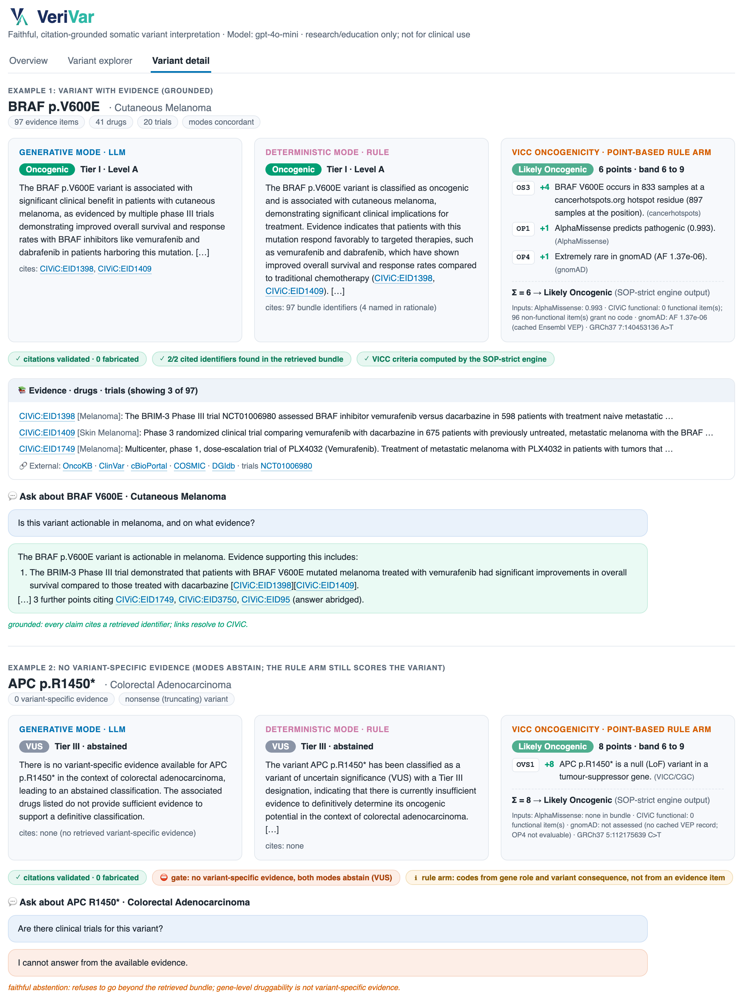
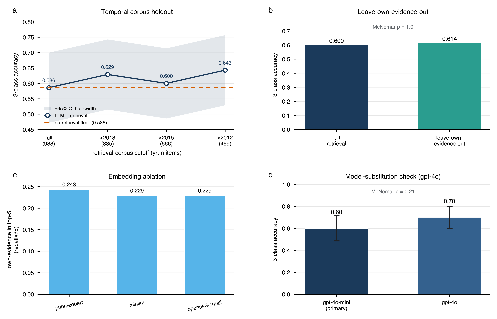
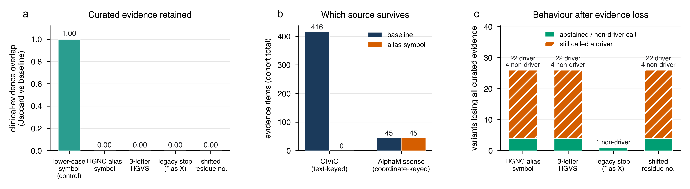
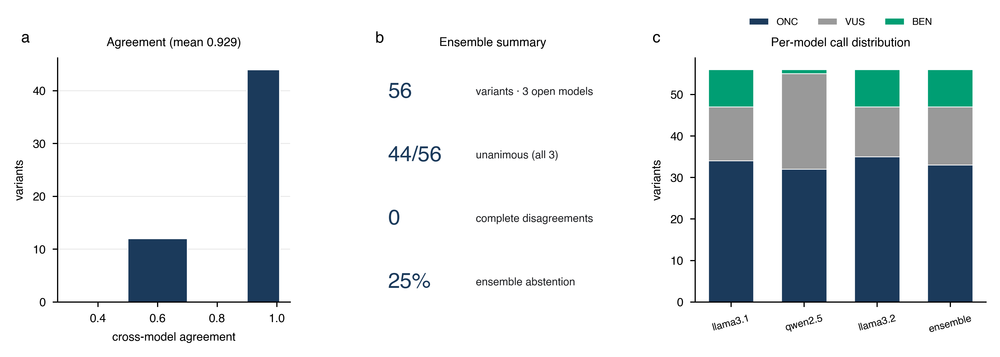

Citation-grounded retrieval for faithful LLM somatic variant interpretation
Author: Ka-Kyung Kim
Affiliation: Independent Researcher, Seoul, Republic of Korea
Correspondence: kakyung.kim@gmail.com
Abstract
Objective. Somatic variant interpretation feeds patient-facing oncology reports, where each oncogenicity and AMP/ASCO/CAP tier call directs or withholds targeted therapy; a large language model (LLM) that fabricates a supporting citation or confidently over-calls a variant is therefore clinically unusable, regardless of whether the call happens to be right. A usable decision-support draft must instead be auditable line by line and must abstain rather than fabricate. LLMs, however, show exactly the opposite two failure modes that bar such use: they fabricate supporting citations, and their judgements can come from parametric memory of well-known variants rather than from auditable evidence. We asked whether retrieval grounding can make LLM interpretation faithful and auditable, separating a citation that does not exist in the retrieved evidence from the harder case of a real citation that does not support its claim, and whether any accuracy effect is genuine or a leakage artifact.
Materials and Methods. We built a dual-mode somatic variant interpreter that classifies variants on two international standards, ClinGen/CGC/VICC oncogenicity and AMP/ASCO/CAP clinical tier, using hybrid citation-grounded retrieval (structured knowledge bases, dense retrieval over CIViC evidence statements, and a knowledge graph) under a faithfulness contract requiring every assertion to cite a retrieved identifier and to abstain (assign a variant of uncertain significance, VUS) when no variant-specific evidence exists. A Generative mode (the LLM assigns the label) was compared with a Deterministic mode (a direction-aware rule assigns the label and the LLM only explains it) and with a no-retrieval baseline. A separate citable ClinGen/CGC/VICC point-based rule arm, implemented to the standard’s written criteria wherever open data allow, was compared with two published engines (OncoVI and the molecular mode of HemaGuide). Evaluation used a 56-variant five-cancer TCGA cohort, an external, balanced 70-variant expert-classified gold standard (Horak et al. 2022), and, for the rule arm, 712 missense variants with a ClinVar somatic oncogenicity classification. We report leakage-free faithfulness metrics scored by one citation taxonomy applied identically to every arm, an entailment (NLI) audit of whether each cited record supports its claim, leakage controls (temporal holdout, leave-own-evidence-out, second model, embedding ablation), bootstrap confidence intervals, and exact McNemar tests.
Results. The measured faithfulness finding concerns citation existence before the faithfulness gate, scored by the same rule in every arm. In a pre-gate run with a populated evidence bundle, none of the 86 identifier citations named a record outside the bundle (one-sided 95% upper bound 3.4%); a further 20 tokens (15 naming only the source “AlphaMissense” and 5 non-identifiers such as the digits 1, 2, 3 and 5 and the code “OP1”) were counted as imprecision. The no-retrieval arm, which received neither an evidence bundle nor an instruction to cite only listed identifiers, cited a fabricated or misattributed identifier for 19 of 56 variants (0.339, Wilson 95% CI 0.229–0.470), a fabricated identifier alone for 14 of 56 (0.250), against 0 of 56 with retrieval (paired exact McNemar p = 3.8 × 10⁻⁶). Whether a real citation supports its claim is the harder question and is answered only in part: on the primary pipeline run, a separate run with the gate in place, an automatic entailment audit found the cited record supporting the citing rationale for 0.444 (95% CI 0.344–0.544) of 90 citations, a noisy lower bound; hand review of the unsupported inline citations found 3 genuine mismatches. The post-gate scorecard of that run (hallucination 0, citation grounding 1.0, directional faithfulness 1.0, abstention recall 1.0) reports the guarantees the contract enforces by construction, not measured emergent outcomes. Retrieval reclassified 12 of 56 confidently over-called variants (21.4%) to evidence-grounded VUS (a behavioural change, not verified correctness). For the generative arm, three-class accuracy was not significantly different from either baseline (0.600 with retrieval, 0.586 without, 0.557 for the simplified rule; McNemar p = 1.0 and 0.61, overlapping CIs), so faithfulness, not accuracy, is its contribution. VeriVar’s rule arm, a deterministic engine and not the LLM, reached three-class accuracy 0.657 (95% CI 0.543–0.771) on Horak-70 with specificity 1.000 (Wilson 95% CI 0.906–1.000), sensitivity 0.424, and AUROC 0.885. It made no oncogenic over-call but left most oncogenic variants at VUS, and its accuracy was lower in point estimate than that of OncoVI (0.652 vs 0.797 on 69 shared variants) and of HemaGuide (0.657 vs 0.800), with neither difference significant (McNemar p = 0.087 for both). On the ClinVar holdout it called oncogenic with specificity 0.970 (0.949–0.986) at sensitivity 0.466 (0.421–0.517), AUROC 0.852. Temporal-holdout, leave-own-evidence-out, model-substitution, and embedding controls left generative-arm accuracy statistically unchanged, so that accuracy does not depend on retrieval-corpus leakage; these controls do not govern the model’s own parametric channel, which remains uncontrolled and is quantified only by the no-retrieval floor. An ablation perturbing only how the variant is written exposes a real limit of the contract: every one of 66 HGNC alias-symbol tests, and every three-letter HGVS rewrite, removed all curated clinical evidence for the affected variants (416 items to 0 cohort-wide), and 22 of the 26 affected variants were nonetheless still called Oncogenic or Likely Oncogenic on the coordinate-keyed computational prior alone. No citation fell outside the retrieved bundle anywhere in that ablation (0 of 228), so the contract’s guarantee holds as written while failing to guarantee what matters clinically, namely that a driver call rests on curated clinical evidence.
Discussion. Retrieval grounding makes the generative interpreter’s citations real and auditable and suppresses confident parametric over-calling, though at this scale it does not raise that arm’s accuracy, and whether each citation supports its claim is measured only approximately. The deterministic VICC rule arm is an abstention-first engine with fully citable criterion codes and no oncogenic over-call on the expert set; at n = 70 it is not accuracy-competitive with published engines.
Conclusion. Faithfulness and auditability, prerequisites for trustworthy clinical decision support, can be guaranteed by construction for citation existence but not yet for citation support, and the guarantee must be specified carefully: ours holds citations to retrieved identifiers without requiring that a driver call rest on clinical evidence, and an input-context ablation shows that gap is reachable by something as ordinary as a legacy gene symbol. Establishing an accuracy benefit would require a larger, powered, leakage-controlled benchmark with expert adjudication, whose design we specify. We measure citation faithfulness, auditability, and classification accuracy only; clinical utility is motivated, not measured (no patient outcomes, no prospective use), and the system is for research and education, not clinical care.
Keywords: somatic variant interpretation; large language models; retrieval-augmented generation; faithfulness; auditability; clinical decision support; precision oncology.
Background and Significance
Somatic variant interpretation — judging whether a tumour mutation is oncogenic and clinically actionable — is a rate-limiting step in precision oncology. In a molecular tumour board, a pathologist drafts an oncogenicity call and an AMP/ASCO/CAP clinical tier for each variant, and each such classification directs or withholds targeted therapy and trial enrolment. The draft is consequential precisely at the level of its individual assertions: a hallucinated rationale — a plausible but non-existent citation under a confident call — invites a clinician to act on evidence that does not exist, and a silent over-call of a benign variant can prompt inappropriate targeted therapy, so every assertion that enters the clinical report must be traceable to a primary source for audit, liability, and regulatory review. This is current practice rather than an aspiration: in a publicly released specimen report from a commercial tumour-normal whole-genome test, every gene and drug description carries its own PMID and every regulatory statement its FDA source [1], so per-assertion attribution is the standard a generative interpreter has to match rather than approximate. The task is also a workforce bottleneck: expert curation does not scale to the variant volume of routine tumour sequencing, and rare or under-curated variants — precisely those where help is most needed — are the slowest and least certain to adjudicate. An automated assistant could therefore have direct clinical value, but only if its draft can be trusted line by line: it must be auditable, and it must declare uncertainty rather than fabricate it away.
Two community standards structure the task. The ClinGen/CGC/VICC framework defines oncogenicity on a five-label point-based system (Oncogenic, Likely Oncogenic, VUS, Likely Benign, Benign) [2], and the AMP/ASCO/CAP framework defines clinical tier (Tier I–IV with evidence levels A–D) [3]. Applying either standard means synthesising heterogeneous evidence — curated clinical assertions, drug–gene interactions, computational pathogenicity predictions, and trial status — into a defensible, citable judgement.
A mature ecosystem already operationalises these standards. Expert-curated knowledge bases such as OncoKB [4], COSMIC [5], and the crowdsourced CIViC [6] supply variant- and gene-level clinical assertions, while rule- or model-based platforms such as CancerVar [7], the Cancer Genome Interpreter [8], and the Personal Cancer Genome Reporter [9] map alterations onto tiers and oncogenicity calls. These systems are accurate and auditable but rely on hand-built rule engines and pre-computed lookups; they neither read free-text evidence on demand nor produce natural-language justifications, and their coverage of rare or under-curated variants is bounded by their databases. We treat this work as prior art our system must remain compatible with — our Deterministic mode is a deliberately simplified, direction-aware re-implementation in the same tradition — not as a baseline we claim to beat. Orthogonally, computational variant-effect predictors such as AlphaMissense [10], the protein-language model ESM1b [11], and the evolutionary model EVE [12] supply genome-scale pathogenicity priors; we use AlphaMissense as one evidence arm but treat such scores as gene-agnostic priors that cannot, alone, establish clinical actionability.
LLMs are attractive for this synthesis because they read free text fluently and emit structured prose. Two failure modes, however, make naïve use unsafe in any auditable clinical setting. First, hallucinated citations: asked to justify a classification, an LLM readily emits plausible but non-existent PMIDs or database identifiers. In a clinical report, a fabricated reference is a patient-safety and medico-legal hazard, because the assertion it appears to support cannot be checked. Second, parametric leakage: because famous driver variants (for example BRAF V600E or KRAS G12D) are heavily represented in pretraining data, an LLM may reproduce the textbook answer from memory rather than from the evidence supplied. This both inflates apparent accuracy on well-known variants and yields confident over-calls on superficially similar but functionally benign ones — an over-call that, in practice, could prompt inappropriate targeted therapy.
Retrieval-augmented generation (RAG) is the natural mitigation: ground the model on retrieved evidence and require it to cite that evidence. Both failure modes are documented outside genomics. The ALCE benchmark [13] formalised automatic evaluation of citation precision and recall and showed that even strong LLMs frequently fail to support their claims, and the MedRAG/MIRAGE study [14] established retrieval as a partial mitigation of hallucination and stale knowledge in medical question answering. Within clinical genomics, recent work has begun to apply LLMs and retrieval to variant interpretation: Lin et al. [15] benchmarked GPT-4o, Llama 3.1, and Qwen 2.5 on cancer-variant classification and reported that all three models tended to assign variants to higher evidence levels, a propensity for over-classification consistent with the parametric over-calling we observe, and that prompt engineering and retrieval improved accuracy; Lu and Cosgun [16] integrated roughly 190 million variant annotations into GPT-4o by RAG and fine-tuning and reported high field-level annotation accuracy. These studies emphasise accuracy against expert labels but leave two questions under-examined. First, is the system actually faithful — does it cite only retrieved evidence and abstain honestly when evidence is absent — and can faithfulness be measured without an external answer key, as general-domain attribution benchmarks [13] do but the genomics RAG work [15,16] does not? Second, is any apparent accuracy benefit real or a leakage artifact — does the system succeed by retrieving recent, answer-stating evidence (corpus leakage) or by parametric recall (model leakage) rather than by evidence-grounded reasoning?
Two clinical-scale systems published in 2026 have since narrowed the first question without closing it. OLIVE constrains a language model with explicit gene-specific guidance files and reached a mean 97.5% concordance with historical laboratory classifications across 1,437 variant observations from 200 consecutive tumour sequencing cases; that concordance is assessed on a binary reportable-versus-VUS axis rather than on either standardised scale, and the reference standard is the laboratory’s own prior interpretation [17]. HemaGuide grounds a locally deployable agent in guideline flowcharts and a memory of more than 2,000 tumour-board cases and reports hallucinations (fabricated drugs, clinical facts or treatment histories) in 2 of 664 evaluated cases; its variant module is a point-based ClinGen/CGC/VICC engine that agreed with the Horak reference on 56 of the same 70 missense variants we use [18]. Its hallucination endpoint is a per-case category within a discordance analysis rather than a per-citation check against retrieved evidence, and it reports no leakage control for variant classification, such as a temporal holdout of the evidence corpus or removal of a variant’s own evidence. The citation-integrity literature has meanwhile separated two failure modes that a single fabrication rate conflates: a cited identifier that does not exist, and a real identifier attached to a claim it does not support. In rare-disease gene curation, unguided models produced the second kind at 95.9% (Claude Sonnet) and 81–87% (three open-weight models), and only a gate that fetched each cited PMID and checked it against the claim removed both kinds before output [19]; claim-level auditing of clinical-guideline answers found that one frontier model (claude-opus-5) attached verbatim quotes to 98.0% of its claims but fully substantiated only 37.1% [20]. Adjacent work applies retrieval or language models to population-variant database question answering [21], precision-oncology treatment recommendation [22], and variant–literature mining [23,24], without standardised oncogenicity or tier calls.
Temporal holdout on its own has precedents. ClawBench, a germline benchmark, scored provenance and safety against a temporally blinded ClinVar truth set whose labels, as its abstract reports, post-date the training cutoff of every model it tested [25], and a clinical-genomics agent that emits an AMP/ASCO/CAP category where one applies was evaluated on 223 cases released after the comparator models’ knowledge cutoff, with blinded expert ratings of citation accuracy and fabricated content, although its code is not public [26]. To our knowledge, no prior variant-interpretation study combines a leakage-controlled accuracy evaluation (temporal corpus holdout and leave-own-evidence-out) with a faithfulness audit that reports identifier-level citation existence and citation support separately, on a fully public, offline-reproducible evidence stack with released code. That is the gap this work targets.
Objective
We address this gap with an applied system and, more centrally, a rigorous evaluation built around faithfulness and leakage rather than headline accuracy. We make three claims, stated with deliberate statistical discipline. First, on citation existence the system is faithful by construction after the gate and was measured faithful before it: no identifier outside the retrieved bundle, against a fabricated or misattributed identifier for about a third of variants in a no-retrieval LLM that received neither evidence nor an instruction to cite only listed identifiers, with both arms scored under one rule (paired exact McNemar p = 3.8 × 10⁻⁶). Whether each real citation supports its claim, the harder property, is measured separately and only approximately. Second, retrieval suppresses confident parametric over-calling, reclassifying several over-called variants to VUS by reading variant-specific evidence (whether each reclassification is correct awaits expert adjudication). Third, the generative arm’s accuracy on a balanced expert gold standard is not significantly different (absence of evidence of a difference at n = 70, not evidence of equivalence) from both a no-retrieval LLM and a simplified rule, with no claim of a generative accuracy gain (the n = 70 differences are not significant; we report this as overlapping CIs and non-significant McNemar tests rather than a formal non-inferiority test, as no non-inferiority margin was pre-specified); separately, a citable VICC point-based rule arm, a deterministic engine implemented to the written standard and not the LLM, is reported for its error profile rather than its accuracy: it makes no oncogenic over-call on the expert gold standard, at the cost of low sensitivity, and at n = 70 its accuracy is not competitive with published engines. We then test with several leakage controls whether the generative arm’s accuracy depends on retrieval-corpus leakage. The contribution is applied and evaluative — a faithful-by-construction system plus a leakage-aware faithfulness/accuracy evaluation — not a new modelling method or an accuracy advance over established interpretation platforms.
Materials and Methods
Figure 1 summarises the system, which we refer to as VeriVar: a hybrid retrieval layer assembles a citable evidence bundle that feeds two interpretation modes under a faithfulness contract, and the resulting interpretations are surfaced through a decision-support interface.

Figure 1. System overview and citation grounding. (a) Each variant passes through a hybrid, citation-grounded retrieval layer (structured, dense, and graph arms) into an evidence bundle in which every item carries a citable identifier; a faithfulness contract requires every assertion to cite only retrieved identifiers and to abstain (assign VUS) when no variant-specific evidence exists. Two interpretation modes follow from the bundle: a Generative mode (the LLM assigns labels with self-consistency voting and an agentic verifier) and a Deterministic mode (a direction-aware rule assigns the label, the LLM writes only the rationale), each emitting a VICC oncogenicity call and an AMP/ASCO/CAP tier. VeriVar’s rule arm runs as a parallel branch from the variant: a citable, SOP-strict VICC point-based implementation with its own open sources (cancerhotspots.org, gnomAD, MaveDB, UniProt, exact-variant CIViC functional evidence, AlphaMissense), no LLM call, and an oncogenicity call only. (b) The three retrieval arms, each citation-bearing. (c) Contract guarantees of the primary post-gate run on the 56-variant cohort: hallucination 0, grounding 1.0, directional faithfulness 1.0, abstention recall 1.0. All four are guarantees the gate enforces by construction, not measured outcomes; the measured citation-existence result comes from a separate pre-gate run and is shown in Figure 2a.
Classification standards
Variants were classified on two axes, each enforced as a controlled enumeration. Oncogenicity followed the ClinGen/CGC/VICC 2022 point-based standard with five labels (Oncogenic, Likely Oncogenic, VUS, Likely Benign, Benign). Clinical tier followed the AMP/ASCO/CAP 2017 standard (Tier I–IV, with evidence levels A–D for Tiers I and II). The ACMG/AMP 2015 germline framework was intentionally not used, as the task is somatic. Unifying both vocabularies as enums let the Generative and Deterministic modes be compared on identical label spaces.
Datasets
Cohort (input variants). Patient variants were drawn from the cBioPortal REST API (TCGA PanCancer Atlas, public) across five cancer types chosen for narrative contrast — lung adenocarcinoma, breast, colorectal, cutaneous melanoma, and pancreatic — at seven samples each (35 samples). Selection was restricted to a 27-gene driver panel and was deterministic, guaranteeing showcase variants such as BRAF V600E appearing in both melanoma and colorectal samples for a context-dependence analysis. After de-duplication by (gene, protein change, cancer) and tiered selection, 56 variant×context units were classified, out of 398 unique candidates.
Knowledge sources (evidence layer). Offline snapshots were assembled from CIViC (1,714 panel evidence rows; CC0), DGIdb (2,608 gene–drug interactions over 27 genes), AlphaMissense via Ensembl VEP REST (computational pathogenicity for 352 missense SNVs, mapped to VICC computational codes), and ClinicalTrials.gov v2 (37 trials). CIViC evidence statements were embedded into a persistent dense index.
Data resources, versions, and genome build. All
upstream resources, their snapshot/version, and coordinate provenance
are listed in Table M0 (compiled from the committed resource manifest
docs/reference/RESOURCES.md /
data/knowledge/resources.json); where no formal upstream
version is published, the resource is recorded as a dated access
snapshot. The primary genome build is GRCh37 (hg19) —
the TCGA cohort coordinates, the AlphaMissense per-variant coordinate
lookups for the cohort, and the Horak coordinates used in our pipeline
are all GRCh37; because AlphaMissense is build-aware and protein-level
(scores are keyed by protein change with no liftover), the build does
not affect protein-change-keyed evidence. CancerVar predictions were
obtained separately on GRCh38 (hg38, the Horak b38 coordinates) as a
cross-axis comparator (see Reporting).
Table M0. Data resources, versions, and genome build.
| Resource | Version/Snapshot | Genome build | Source | Access date | License/Notes |
|---|---|---|---|---|---|
| TCGA PanCancer Atlas 2018 cohort (via cBioPortal) | cBioPortal snapshot (5 studies, 7 samples/study) | GRCh37 (hg19) | cBioPortal REST API | 2026-05-30 | TCGA open-access somatic mutations; 27-gene driver panel |
| CIViC (clinical evidence + assertions) | nightly snapshot 2026-05-30 | n/a (gene/variant-level) | civicdb.org nightly TSV | 2026-05-30 | CC0 1.0; 1,714 evidence rows; 35 assertions |
| DGIdb (drug–gene interactions) | API snapshot 2026-05-30 | n/a (gene-level) | dgidb.org GraphQL API | 2026-05-30 | 2,608 gene-level interactions; not variant-specific evidence |
| AlphaMissense (computational pathogenicity) | model 2023 (Cheng et al., Science 2023), via Ensembl VEP REST | build-aware, protein-level (no liftover) | Ensembl VEP REST (AlphaMissense=1) | 2026-05-30 | 352 missense SNVs; thresholds pathogenic≥0.564, benign≤0.34; predictions CC BY 4.0 (current Zenodo release, record 10813168; the first release was CC BY-NC-SA 4.0) |
| ClinicalTrials.gov | REST API v2 snapshot | n/a | clinicaltrials.gov API v2 | 2026-05-30 | 37 trials linked from CIViC NCT ids |
| UniProt protein domains | snapshot (no upstream version recorded) | n/a (protein/UniProt residue numbering) | rest.uniprot.org | snapshot | CC-BY 4.0; domain spans for 9 genes |
| Horak et al. 2022 (external gold standard) | 70 expert-classified variants (ClinGen/CGC/VICC) | GRCh37 (b37) + GRCh38 (b38) both committed | PMC9081216 | snapshot | Genet Med 2022;24(5):986–998; VICC point-based oncogenicity standard |
| CancerVar (cross-axis AMP/ASCO/CAP comparator) | web server snapshot 2026-06-14 (hg38_update) | GRCh38 (hg38; Horak b38 coordinates) | cancervar.wglab.org | 2026-06-14 | Li et al., Sci Adv 2022;8(18):eabj1624; tiers parsed verbatim |
| ClinVar somatic oncogenicity (rule-arm holdout) | FTP variant_summary.txt.gz (Last-Modified 2026-09-14)
and submission_summary.txt.gz (2026-09-13) |
GRCh38 | ftp.ncbi.nlm.nih.gov/pub/clinvar | 2026-09-24 | aggregate Oncogenicity field, review status “criteria provided”; 737 missense rows; public (NCBI) |
| cancerhotspots.org (rule arm, OS3/OM3/OP3) | hotspots v2 aggregate | n/a (protein residue) | cancerhotspots.org | snapshot | ODbL 1.0 |
| MaveDB deep mutational scanning (rule arm, OS2/SBS2) | three score sets (TP53, PTEN) | n/a (protein residue) | mavedb.org API | snapshot | CC0 1.0 |
| gnomAD allele frequency (rule arm, OP4/SBS1/SBVS1) | via Ensembl VEP colocated records | GRCh37 (Horak), GRCh38 (ClinVar) | Ensembl VEP REST | snapshot | overall max(exome, genome) AF; public |
| OncoVI published predictions (comparator) | SOP_table_union_OncoVI_prediction.xlsx |
n/a (gene + protein change) | OncoVI GitHub repository | snapshot | MIT |
| HemaGuide Supplementary Table 6 (comparator) | 70 per-variant molecular-mode calls | n/a (gene + protein change) | Nat Med 2026 supplementary data | 2026-09-24 | CC BY 4.0 |
| Ensembl VEP REST mirrors | REST endpoints (per-variant snapshot, local caches) | GRCh37 (grch37.rest.ensembl.org) · GRCh38 (rest.ensembl.org) | rest.ensembl.org | 2026-05-30 | VCF annotation + AlphaMissense lookups; cached for offline reproducibility |
| LLM — gpt-4o-mini (primary) + gpt-4o (replication) | gpt-4o-mini (primary); gpt-4o second-model replication | n/a | api.openai.com | 2026-05-30 | Self-consistency n=3 + agentic verifier; offline mock fallback when unset |
External benchmark (ground truth). The external gold standard was Supplemental Table 3 of Horak et al. (2022), the ClinGen/CGC/VICC oncogenicity standardisation paper: 70 expert-classified somatic variants across nine genes (FLT3, BRAF, IDH1, KRAS, PIK3CA, PTEN, RB1, EZH2, TP53). The label distribution is balanced (VUS 30, Likely Oncogenic 19, Oncogenic 14, Benign 5, Likely Benign 2), making it a discriminating benchmark, unlike CIViC clinical assertions, which are heavily skewed toward a single class. The Horak reference classifications are included in the repository as derived tables, with attribution to Horak et al. and to their CC BY 4.0 republication in HemaGuide Supplementary Table 6 (see Data and Code Availability).
ClinVar oncogenicity holdout (rule arm only). A
second external set was built from the ClinVar FTP release of 14
September 2026 (scripts/fetch_clinvar_oncogenicity.py):
GRCh38 records whose aggregate Oncogenicity field carries a
classification with a review status beginning “criteria provided”,
restricted to single-nucleotide missense changes (737 rows). Labels were
read from that field, not from a search term. After removing 2 aggregate
conflicts and the 16 Horak-70 variants and de-duplicating by gene and
protein change, 714 variants remained with no within-variant label
conflict; the 2 benign variants were set aside, leaving an oncogenic
(Oncogenic or Likely oncogenic, 416) versus uncertain (296) task over
191 genes. AlphaMissense scores and gnomAD frequencies for these
variants were fetched once from Ensembl VEP (GRCh38) and stored with the
snapshot. The ClinVar-derived OS1 lever was switched off, and no other
ClinVar field was read by the engine
(scripts/run_clinvar_onc_holdout.py). The generative arm
was not run on this set.
Published comparator predictions. OncoVI’s
per-variant predictions were taken from its released output file and
HemaGuide’s from Supplementary Table 6 of its report (CC BY 4.0;
scripts/fetch_hemaguide.py). Both were matched to the Horak
gold by gene and protein change: 69 variants are shared with OncoVI and
all 70 with HemaGuide, whose reference decisions and points equal the
Horak gold for every variant. Both published engines are point-based
rule engines, so they are compared with our rule arm and not with the
generative arm.
Hybrid, citation-grounded retrieval
For each variant, an evidence bundle was assembled from three arms, every item carrying a citable identifier. The structured arm performed exact gene-plus-protein-change lookup in CIViC, gene-level drug lookup in DGIdb, and AlphaMissense lookup by genomic coordinate (yielding a VICC computational code). The dense arm used domain embeddings (NeuML/PubMedBERT by default; OpenAI text-embedding-3-small as an ablation) over CIViC statements, fused BM25 and Chroma retrieval by Reciprocal Rank Fusion, and attached only same-variant hits to guard against same-gene topic drift. The restriction matters because embedding similarity does not separate variants reliably: in a nine-pair analysis, every pair of clinically distinct CIViC-informed variants had cosine similarity of at least 0.95 under both PubMedBERT and MedCPT [27] (a single-author preprint whose author declares a competing interest), so a dense hit for a neighbouring variant cannot be trusted to describe the queried one. The graph arm used a networkx knowledge graph (gene, variant, disease, drug, trial) to surface related variants via shared drugs. A faithfulness contract governed the output: a classification could cite only retrieved identifiers, and the system was required to abstain (assign VUS) when no variant-specific evidence existed; gene-level druggability did not count as variant-specific evidence.
Dual-mode classification: Generative and Deterministic modes
The two modes embody a deliberate trade-off between flexibility and reproducibility, and the system runs both on every variant. The Generative mode lets the LLM itself decide the labels: because a language model can read and weigh free-text evidence that no fixed rule enumerates, this mode suits exploratory interpretation and rare or under-curated variants, at the cost of run-to-run variability and a tendency to over-call. The Deterministic mode instead fixes the label with a transparent, direction-aware rule and demotes the LLM to writing only the human-readable rationale; this buys reproducibility and auditability — identical output on every run, in the tradition of curated rule engines — while still gaining fluent natural-language justification, and it never lets the model’s parametric priors override the evidence. Running both on the same variants is itself informative: where the flexible reader and the fixed rule disagree localises genuine interpretive uncertainty (Results, dual-mode discordance), so discordance is treated as a signal rather than a defect.
Generative mode. The LLM (gpt-4o-mini) assigned the
oncogenicity and tier labels itself, constrained to the enum vocabulary
and grounded on the evidence bundle. It was enhanced with
self-consistency voting (n = 3; agreement mapped to a confidence score)
and an agentic verifier — an adversarial second pass that downgrades
over-claims and is skipped on abstentions. Deterministic
mode. A direction-aware rule assigned the labels from CIViC
significance and direction, so that “Unaltered Function” or “Does Not
Support” evidence counts against oncogenicity and only
Sensitivity/Response evidence confers actionability; here the LLM wrote
only the natural-language rationale. A no-retrieval
baseline asked the same model for its own assessment of the
same variant with no evidence bundle and no instruction to cite only
listed identifiers (SYSTEM_PARAMETRIC,
src/classify/llm.py), capturing parametric behaviour. The
citation-existence comparison in Results therefore contrasts this arm
with a grounded arm whose prompt both supplies the bundle and restricts
citation to its identifiers
(scripts/run_multimodel_faithfulness.py); evidence
availability and the citation instruction vary together, and the study
does not separate them.
We used gpt-4o-mini as the primary model deliberately: the contribution is the retrieval-and-faithfulness architecture rather than any single model, and an inexpensive model both makes the cohort-scale dual-mode runs and ablations affordable and sets a conservative capability floor — properties demonstrated on a weak model are more likely to hold on a stronger one. Temperature 0 was used for determinism and reproducibility, with 0.4 only on the self-consistency voting passes to induce the answer diversity that voting requires. To confirm the findings are not an artifact of model size, we replicated the external benchmark on the stronger gpt-4o (Results, model-substitution test; Table 1); we did not exhaustively sweep other proprietary or open models, which we note as a limitation.
Citable VICC rule arm (SOP-strict implementation)
Separately from the two modes, a deterministic ClinGen/CGC/VICC
point-based classifier (src/classify/vicc_rules.py) fires
named criteria over open evidence sources (cancerhotspots.org,
exact-variant CIViC evidence, UniProt residue features, gnomAD
population frequency via Ensembl VEP, MaveDB deep-mutational scanning,
and AlphaMissense) and emits every fired criterion as a citable record
(VICC code, points, supporting statement, data source). It involves no
LLM call. The rule arm implements the SOP (Horak et al. 2022, Tables 2–3
and Figure 1) [2] as written wherever open data allow, including every
combination rule: OS3 requires at least 50 samples at the residue and at
least 10 with the same amino-acid change in cancerhotspots.org, OM3
fewer than 50 at the residue and at least 10 with the same change, and
OP3 fewer than 10; OM1 is not applied with OS1 or OS3, OM3 not with OM1
or OM4, OS3 and OS2 not with OS1, and OM2 not with OVS1. OM1 is
restricted to UniProt residue-level active- or binding-site features (“a
critical and well-established part of a functional domain”). OP4
requires absence from gnomAD or an allele frequency below 10⁻⁴. Absence
of a gnomAD frequency for the allele in the VEP colocated-variant record
is treated as absence from gnomAD and earns OP4 (40 of 70 Horak
variants; 509 of 714 ClinVar variants). Site coverage is not checked.
OS2 and SBS2 use only functional evidence (CIViC Functional items, CIViC
Oncogenic items at preclinical level D, and MaveDB
deep-mutational-scanning calls for TP53 and PTEN); predictive,
prognostic, diagnostic, and predisposing CIViC evidence grants no code.
Four criteria cannot be evaluated from open data and are left
unassigned: OS1 and OM4, which require a reference set of variants
already classified under the SOP (the only open source, ClinVar
oncogenicity, is also the holdout label); OP2, which requires the tumour
type; and SBP2, which requires splice prediction and conservation. Five
further criteria are approximated and disclosed: OP1 and SBP1 rest on a
single predictor (AlphaMissense), SBVS1 and SBS1 use the overall rather
than the maximum continental gnomAD frequency, and OP4 treats a missing
gnomAD frequency as absence, as described above. Point totals map to
classes by the SOP ranges (Benign ≤ −7, Likely Benign −6 to −1, VUS 0 to
5, Likely Oncogenic 6 to 9, Oncogenic ≥ 10), with no additional guard
rules. The operating point for oncogenic-versus-rest metrics, 6 points
or more, is the SOP’s Likely Oncogenic boundary and was not tuned. Each
implementation choice follows the SOP text and was not selected by
benchmark performance; every change from the earlier configuration
lowered Horak-70 accuracy, and a component-wise account and the
alternative domain-level OM1 reading (0.671) are reported in the
correction note. A pre-specified round that tried to remove three of the
approximations is reported in Results as a sensitivity analysis. Two
levers outside the SOP, residue-total hotspot tiering and OS1 from
ClinVar oncogenicity labels, are reported only as a sensitivity dial,
and two earlier configurations of the engine are reported as sensitivity
analyses in the correction note (Results). The Deterministic mode’s
simplified rule (src/classify/rules.py) is a separate
engine and was not changed.
Evaluation and statistics
Three classes of evaluation were run. Leakage-free faithfulness metrics required no external truth: hallucinated-citation rate (fraction of variants whose emitted citations are absent from the retrieved bundle), citation grounding, directional faithfulness (whether the assigned label respects the direction of the cited evidence), abstention recall (fraction of no-evidence variants correctly abstained), and inter-mode Cohen’s κ. An ablation compared the Deterministic mode, the no-retrieval LLM, and the Generative mode with retrieval. The external benchmark computed five-class and collapsed three-class accuracy and κ against the Horak gold standard. Leakage controls comprised a temporal split (restricting the retrieval corpus to literature published before a cutoff year), a leave-own-evidence-out (LOVO) ablation (removing each variant’s own curated CIViC evidence before retrieval), a second-model replication (gpt-4o), and an embedding ablation (PubMedBERT versus MiniLM versus OpenAI, scored by recall@5 of the held-out own-evidence). Eight additional cohort analyses (cross-cancer consistency, sensitivity/resistance, dense recall-lift, AlphaMissense–LLM agreement, calibration, discordance concentration, hotspot-versus-rare, and verifier net-effect) characterised behaviour.
One citation taxonomy for every arm. Each emitted
citation token was classified by a single rule set that does not depend
on which arm produced it (src/eval/citation_taxonomy.py,
run by scripts/run_citation_taxonomy.py; output
data/outputs/citation_taxonomy.json). A token is
identifier-bearing when it matches a PMID, a ClinVar accession, a CIViC
evidence identifier, an NCT number or a genomic coordinate, or when it
is a number under a namespace that issues no bare numeric identifiers
(for example “ClinGen: 123456”). Everything else, namely a bare source
name such as “AlphaMissense”, a source name plus a gene, a bare digit or
a criterion code such as “OP1”, is a non-identifier and counts as
imprecision in every arm. An identifier-bearing token is in the bundle
when it matches a retrieved identifier or a PMID attached to a retrieved
item. Outside the bundle it is fabricated when it cannot name
any record (no identifier scheme), follows a placeholder pattern (for
example 12345678 or 87654321), or returns no NCBI record, and
misattributed when the record exists but its title and abstract
do not name the variant’s gene (NCBI E-utilities, cached lookups). The
rules were written before the module produced counts but after a
reviewer’s manual breakdown of the no-retrieval citations was known, so
they are pre-specified rather than blind. The no-retrieval arm receives
no bundle, so the rules were applied against an empty bundle and,
separately, against the retrieval bundle stored for the same variant;
the two give identical counts. Variant-level proportions carry Wilson
95% intervals, a zero count carries a one-sided exact (Clopper-Pearson)
95% upper bound, and arms are compared by the exact McNemar test on
paired per-variant indicators.
Citation-support audit. Bundle membership shows that
a citation exists, not that it supports its claim. We therefore scored
support with a natural-language-inference (NLI) model, with no
language-model API call (scripts/run_nli_attribution.py).
For each citation in the primary pipeline run (90 citations over 46
variants, all inside the bundle), the premise was the cited evidence
record (its gene, variant, disease, evidence type, direction and
significance fields plus its statement) and the hypothesis was the
rationale sentence citing it: the sentence that cites the item inline
where one exists (37 citations), otherwise the rationale sentence with
the highest entailment score (53 citations, an optimistic alignment). A
DeBERTa-v3-large NLI model
(MoritzLaurer/DeBERTa-v3-large-mnli-fever-anli-ling-wanli,
fixed revision) labelled a citation supported if the maximum entailment
probability was at least 0.5, else contradicted if the maximum
contradiction probability was at least 0.5, else neutral; the rule was
fixed before scoring. A smaller NLI model and a statement-only premise
served as sensitivity analyses. The 106-citation run records identifiers
without rationale text, so for it only the emitted label, rendered by a
fixed template (“GENE PROTEIN is an oncogenic mutation”), could be
tested, and this label-level result was cross-tabulated against the
imprecision measure. Unsupported and contradicted rows were read by hand
(by the author with AI assistance; not expert-adjudicated).
Uncertainty was quantified by nonparametric bootstrap 95% confidence
intervals on accuracy and concordance (percentile method,
src/eval/stats.py, 5,000 resamples with a fixed seed; the
CancerVar comparison script uses its own bootstrap, 2,000 resamples; for
the citation-support audit a variant-clustered bootstrap is added as a
sensitivity analysis, and the ClinVar AUROC intervals use a
class-stratified bootstrap of 2,000 resamples), and paired methods were
compared by the exact McNemar test on per-variant correctness; all
reported p-values are two-sided. Where a proportion is 0 or 1, the
percentile bootstrap collapses to a zero-width interval, so for
sensitivity and specificity on Horak-70 (Table 2, Figure 3) and for such
boundary proportions in the text we report Wilson score intervals
instead. No correction for multiple comparisons was applied. The study
runs about a dozen paired McNemar tests on accuracy (the generative arm
against two baselines, leave-own-evidence-out and gpt-4o; the rule arm
against three published engines; and the configurations of Table 3),
none of which is used to support a claim of an accuracy difference, so
those p-values, including the Table 3 p-values, are descriptive. The one
test used to support a claim, the paired citation-existence contrast (p
= 3.8 × 10⁻⁶), would remain far below 0.05 under a Bonferroni correction
for every test reported. The implementation comprised the pipeline and
295 automated tests, and the system runs offline from committed
snapshots for reproducibility.
Input-context ablation
A variant enters this system as a gene symbol plus a protein change,
and both are written differently by different sources. A legacy
pathology report says HER2 where HGNC says ERBB2; one annotation
pipeline emits p.Val600Glu where another emits
p.V600E; pre-HGVS tools write p.R130X for what
is now p.R130*; and the same genomic change annotated
against a different transcript lands on a different residue number. The
first three are alternative spellings of the same variant and must not
change the interpretation. The fourth denotes a different residue and
must not be silently accepted. Because every structured lookup in the
retrieval layer keys on the uppercased (symbol, protein-change) pair,
and the dense arm additionally requires the retrieved document’s gene
symbol to match the query’s exactly, this is a place where the system
could fail quietly, so we measured it rather than assuming it
(scripts/run_context_ablation.py).
Each perturbation was applied to the input of all 56 cohort variants
and the pipeline re-run. Alias replaces the symbol with
an HGNC alternative, taken from the HGNC REST record for each cohort
gene rather than chosen by us
(scripts/fetch_gene_aliases.py; withdrawn previous symbols
preferred, then current aliases). Three-letter rewrites
the protein change in three-letter HGVS. Legacy stop
rewrites a nonsense variant’s terminator as X.
Shifted residue adds a fixed offset of 12 to the
residue number; this arm is explicitly synthetic, emulating a different
transcript’s numbering rather than re-annotating against real
alternative transcripts, and it tests whether a wrong residue number is
caught rather than how often one arises. A fifth arm lower-cases the
gene symbol and serves as a negative control: lookups
upper-case their keys, so this arm must show no change at all. The
control is what makes the rest interpretable, since a run in which every
arm collapses would otherwise be indistinguishable from a broken
harness.
Two things were measured. Retrieval was swept exhaustively and deterministically: every variant was re-retrieved under every HGNC alternative symbol for its gene, at no model cost, scoring the Jaccard overlap of retrieved evidence identifiers against baseline. That sweep is scored on curated clinical evidence (CIViC) specifically, because the AlphaMissense annotator is keyed on genomic coordinates that no perturbation touches and therefore survives every arm by construction; counting it would mask the loss that matters. Classification was then run for one deterministic perturbation per arm, in Generative mode at temperature 0 with a single pass, to answer the question retrieval cannot: once the curated evidence is gone, does the system abstain, or does it fall back on parametric knowledge and assert a driver anyway? That distinction is the safety-relevant one. A terminology mismatch that yields an honest abstention costs recall; one that yields a confident oncogenic call on evidence the system no longer retrieved is a faithfulness failure, and a far more serious one.
Reporting
We report this study against two complementary instruments. Because the system is an LLM-based prediction model, we follow TRIPOD-LLM [28], the reporting guideline for studies using large language models, for model specification, sample-size justification, and subgroup reporting; because the external evaluations (Horak-70 and the ClinVar holdout) are accuracy studies against an expert reference standard, we additionally apply a STARD [29] diagnostic-accuracy lens for the participant/variant flow, reference-standard specification, and handling of indeterminate results. Indeterminate outputs (VUS/abstentions) are treated as a reported class rather than excluded — a STARD “intermediate result” handling decision that is clinically appropriate for an abstention-first design. The primary study is single-run and not powered for an accuracy claim; this sample-size limitation is stated up front (see Discussion, “Toward a powered accuracy evaluation”) in line with TRIPOD-LLM’s expectation that it be declared rather than implied.
Variant flow (STARD). The cohort flow was: 398 unique candidate variants drawn from the cBioPortal TCGA PanCancer Atlas across the 27-gene driver panel and five cancer types → after de-duplication by (gene, protein change, cancer) and tiered selection (capping AlphaMissense-only and no-evidence variants per cancer for cost control), 56 variant×context units classified in dual mode. The external accuracy benchmark used all 70 expert-classified variants from Horak et al. 2022 Supplemental Table 3 (the Horak-70 gold standard). The rule-arm head-to-heads were restricted to variants with published per-variant predictions: 69 shared with OncoVI (Carta et al. [30], an open-source implementation of the ClinGen/CGC/VICC oncogenicity guideline) and all 70 with HemaGuide’s molecular mode [18]. The ClinVar holdout flow was 737 criteria-provided GRCh38 missense records → 2 aggregate conflicts and 16 Horak-70 overlaps removed and records de-duplicated by gene and protein change → 714 variants → 2 benign variants set aside → 712 variants (416 oncogenic, 296 uncertain) scored by the rule arm. No variant with a coordinate and retrievable status was excluded from the external sets after entry.
CancerVar predictions (cross-axis comparator).
CancerVar AMP/ASCO/CAP tier predictions were obtained from the official
CancerVar web server (cancervar.wglab.org; endpoint
results_new.php) for all 70 Horak variants, queried by
GRCh38 position (chr/pos/ref/alt, build hg38_update, the same b38
coordinates as the Horak gold) with
cancer_types = All_types; tiers were parsed verbatim from
the returned result pages (clinical-significance field
Tier_X with the criteria point total), so no tier was
computed or assigned by our pipeline (fetched 2026-06-14 UTC; the parsed
predictions are released as cancervar_predictions.json,
while the raw per-variant HTML responses were kept locally and are not
redistributed, and can be re-fetched with
scripts/fetch_cancervar.py). Because CancerVar reports
clinical-actionability tiers rather than VICC oncogenicity, we mapped
Tier_I/II→Oncogenic, Tier_III→VUS, and Tier_IV→Benign solely to score it
on the VICC oncogenicity gold; this mapping is a reporting convenience
for a cross-axis comparison (Results) and favours neither tool.
Model card (TRIPOD-LLM). The classification model and its evaluation configuration are summarised in Table M1.
Table M1. Model card.
| Item | Specification |
|---|---|
| Primary model | gpt-4o-mini (OpenAI), via langchain-openai structured
output |
| Substitution model | gpt-4o (model-substitution check, Results) |
| Multi-model POC raters | Llama 3.1 8B, Qwen 2.5 3B, Llama 3.2 3B (Ollama, offline) |
| Temperature | 0 for classification (determinism); 0.4 only on self-consistency voting passes |
| Self-consistency voting | n = 3 (agreement mapped to a confidence score) |
| Agentic verifier | adversarial second pass; on/off ablated; skipped on abstentions |
| Output space | enforced enums — VICC oncogenicity (5 labels) and AMP/ASCO/CAP tier (I–IV) |
| Knowledge snapshots | CIViC (1,714 rows, CC0); DGIdb (2,608 interactions); AlphaMissense (352 missense SNVs); ClinicalTrials.gov v2 (37 trials); offline, committed |
| Embedding (dense arm) | NeuML/PubMedBERT (default); OpenAI text-embedding-3-small (ablation) |
| Recorded provenance | per-run digests of all five system prompts, sampling temperatures, voting size, faithfulness-contract version, git revision |
| Change control | 12-variant golden-set regression snapshot
(scripts/run_golden_regression.py), built live;
configuration check runs offline |
| Reproducibility | runs offline from committed snapshots; bootstrap seed fixed (0); 295 automated tests |
A per-gene accuracy and abstention breakdown (Supplementary Table S1) surfaces the thin-coverage subgroups (notably EZH2 and PTEN) so that the rare-variant weakness is auditable.
Decision-support interface
To make the faithful interpretations usable at the point of decision, the system exposes a browser dashboard. A cohort explorer filters variants by evidence status, drug or trial availability, and inter-mode discordance, and exports the filtered set. A per-variant view shows the Generative and Deterministic calls side by side, with each cited item rendered as a clickable link to its primary source — CIViC evidence items, ClinicalTrials.gov records, and external knowledge bases (OncoKB, ClinVar, cBioPortal, COSMIC, DGIdb). A grounded question-answering chat extends the faithfulness contract to free-text interaction: it answers a question about the selected variant only from that variant’s retrieved evidence bundle and abstains (“I cannot answer from the available evidence”) when the bundle does not cover the question, treating gene-level druggability as insufficient (Supplementary Figure S1). Beyond the committed cohort, the dashboard also accepts a user-supplied VCF: variants are annotated through the Ensembl VEP REST API (genome build auto-detected, GRCh37 or GRCh38) and passed through the same dual-mode interpretation and faithfulness contract, with the annotated calls exportable as a VEP-annotation table, a combined interpretation table, or an annotated VCF. The interface is a research and educational demonstrator, not a validated clinical tool.
Change control: run provenance and a golden-set regression check
A system built on a hosted model API carries a dependency it does not control, since the provider can alter the model behind a stable identifier without the application seeing either the change or its timing. Two mechanisms in the released code address this, described here because they are part of what makes the artifact reproducible rather than incidental engineering.
Run provenance. Every output records the configuration that fixes the model’s behaviour, not merely the model name and a timestamp. The system prompts for all five call types — Generative-mode classification, the no-retrieval baseline, the Deterministic-mode rule explanation, the grounded chat, and the adversarial verifier — are held as named constants and hashed, individually and in combination, into each run’s provenance record, together with the sampling temperatures, the self-consistency sample count, the version of the faithfulness contract in force, and the short git revision of the tree that produced the run, marked as modified when uncommitted changes were present. A prompt edit or a guardrail change consequently surfaces in the output rather than only in the source history, which is what lets a later behavioural difference be attributed instead of guessed at. Printing the analysing version into the artifact itself is the deployed convention: the specimen report cited above carries its sample tracking identifier, analysis identifier, pipeline version, and report-template revision on the report [1]. The provenance record plays that role for a component whose behaviour can change without any version number moving.
Golden-set regression. Twelve variants are pinned as
a fixed reference set (scripts/run_golden_regression.py),
chosen to span the behaviours this study depends on: two canonical
strongly evidenced calls (BRAF V600E in melanoma, EGFR L858R in lung
adenocarcinoma); the same variant scored in a second tumour type, for
BRAF V600E and for KRAS G12V, which exercises context dependence; the
case in which the dense arm supplies the decisive evidence (PIK3CA
H1047R); the three beyond-rules discordances (PIK3CA R88Q, PTEN R130*,
ESR1 E247K); an abstention case with no variant-specific evidence (APC
R1450*); the discordance-heavy gene (TP53 R175H); and a
computational-prior-only missense (ALK G1121D). For each variant and
each mode the snapshot records the two classification axes, the
abstention flag, and the cited evidence identifiers. The free-text
rationale is excluded from comparison, since it varies without the
classification having changed and would generate noise rather than
signal. The check re-runs the pinned set under a deliberately
deterministic configuration — temperature 0, single pass, no
self-consistency voting — and exits non-zero on a difference, printing
the configuration drift that would explain it.
What counts as a difference has to account for the classifier not reproducing itself. The repeatability measurement reported below with the input-context ablation puts the pairwise disagreement from an identical prompt at 17.3% across the compared fields, most of it the exact citation set at 10.1%; twelve pinned variants compared strictly against a single stored draw would therefore differ in most runs for reasons that have nothing to do with drift, which is what we observed when the check was first run. Repeat consistency of 87.9–93.7% has been reported for a clinical-genomics agent [26]; that score counts items whose accuracy score agrees across three runs, whereas the 17.3% here counts field-level pairwise disagreements, so the two are not on the same scale. Three things follow, and all three are implemented. The deterministic rule mode is compared exactly, because it is code and anything that moves there is real. The generative mode is drawn seven times when the snapshot is built and three times when it is checked, with labels pinned at the majority across draws and a pinned label counted as reproduced if any draw returns it. Citations are pinned at the identifiers every build draw produced, and the test is that each pinned identifier reappears in at least one check draw; identifiers seen but not pinned are recorded beside the entry and never cause a failure. Against the committed snapshot, 21 identifiers are pinned across the twelve variants and a further 14 were observed without being stable enough to pin. A configuration-only form of the check, comparing the tree’s prompt and guardrail digests against the snapshot’s, runs in the offline test suite without API access. The committed snapshot was built live against gpt-4o-mini from seven draws per variant and reproduces the qualitative behaviours reported below, including abstention on APC R1450* and all three beyond-rules discordances; because it uses the deterministic single-pass configuration rather than the voting-plus-verifier configuration of the primary run, its per-variant tiers are not expected to match the primary cohort output element for element. Rebuilding it on this basis also had to absorb one change that was not sampling. KRAS G12V in pancreatic adenocarcinoma was Oncogenic at Tier I in draws taken on the morning of 8 August 2026 and Likely Oncogenic at Tier II in eighteen draws taken that afternoon and evening, under the same prompt digest and the same thirteen-item evidence bundle. Across all 56 cohort variants it was the only one whose morning label failed to reappear in any afternoon draw, so the change is narrow rather than model-wide, and these data cannot say whether the hosted model or its serving configuration moved. The current snapshot pins the later behaviour. We present this as a reproducibility artifact rather than a result. It is the operational form of the expectation, in change-management frameworks for AI-enabled software, that a planned modification be verified against acceptance criteria fixed in advance [31], applied here to the one modification a system on a hosted model cannot avoid.
Results
Citation existence measured before the gate and enforced after it
A citation can fail in two ways, and we report them separately. It can name evidence that is not in the retrieved bundle, the analogue of what the citation-integrity literature calls a Type I error, a cited identifier that does not exist [19]; or it can name a real, retrieved record that does not support the claim it is attached to (Type II). The faithfulness contract addresses only the first by construction, so we lead with the empirical Type I result and then measure Type II as far as we can.
Citation existence (Type I). Every arm was scored by the same citation taxonomy (Methods). In a pre-gate run with a populated evidence bundle (gpt-4o-mini, single rater, no citation gate), the model emitted 106 citation tokens for 39 of the 56 cohort variants. Of the 86 identifier-bearing tokens, none named a record outside the bundle (0 of 86; one-sided 95% upper bound 3.4%), and no variant carried a fabricated or misattributed identifier (0 of 56; Wilson 95% CI 0–0.064). The other 20 tokens (18.9%) were not identifiers: 15 named only the source (“AlphaMissense”) and 5 were the digits 1, 2, 3 and 5 or the criterion code “OP1”. Under the common rule these count as imprecision in every arm, the no-retrieval arm included, and the gate’s exact-identifier matching removes them. This 106-token run is a separate run from the primary pipeline run (self-consistency voting, verifier and gate; 90 citations over 46 variants), which supplies the post-gate scorecard and the citation-support audit below, so the two should not be read as one pre-gate-then-post-gate sequence.
The post-gate scorecard of the primary run (Figure 1c) reports the guarantees the contract enforces by construction, not emergent properties the model discovered: the faithfulness gate enforces exact-identifier matching and forced abstention, so across the cohort the hallucinated-citation rate is 0.0 (0 of 46 variants that emitted citations), citation grounding is 1.0 (44/44), directional faithfulness is 1.0 (44/44; no assigned label contradicted the direction of its cited evidence), and abstention recall is 1.0 (10/10 no-evidence variants correctly abstained to VUS). A system that refuses to emit any non-retrieved identifier will score 0 fabrication and 1.0 grounding by definition; these numbers are therefore a statement about what the contract guarantees, and the pre-gate run above is their measured counterpart. Two further evidence-bearing variants were also conservatively abstained, a conservatism we connect to the VUS over-resolution discussed in the Discussion. The grounding and directional denominators are 44 rather than 46 because, of the 46 variants emitting citations, 2 emitted only non-citable tokens with no resolvable retrieved identifier to check. In the Deterministic mode no LLM call is made for the classification, so there is no generated citation to fabricate, and all citable codes reference the open evidence source that fired them.
Citation support (Type II) is measured only approximately. On the primary pipeline run, the NLI audit labelled 40 of 90 citations supported (0.444, 95% CI 0.344–0.544; variant-clustered CI 0.348–0.543), 43 neutral (0.478), and 7 contradicted (0.078, 0.033–0.133); at the variant level, every citation was supported for 14 of 46 citing variants. We read 0.444 as a noisy lower bound on support rather than as a Type II rate, because hand review found the NLI labels biased against support. None of the 20 rows labelled contradicted across the two runs was a genuine contradiction: 13 were the model scoring “AlphaMissense predicts this variant as pathogenic” as contradicting “this variant is an oncogenic mutation”, and the rest were sentences that joined two co-cited items or were unrelated to the cited item. Of the 18 inline citations labelled neutral, about 9 were NLI false negatives, 5 were partially supported, 1 was borderline, and 3 were genuine mismatches: an in-vitro regorafenib-resistance item (CIViC EID3710) cited for poorer responses to cetuximab and gefitinib on KRAS G12A, the corresponding regorafenib item (EID3946) cited as evidence of anti-EGFR resistance on KRAS G12D, and a xenograft study of capivasertib with trastuzumab (EID1505) cited for a retrospective survival claim on PIK3CA H1047R. Rationales that append an inference no item states, or join facts from two items, also depress the entailment score. On the 106-citation run, where only the emitted label could be tested, 64 of 99 testable citations were supported (0.646, 0.556–0.737; 59 of 76 CIViC items and 5 of 23 AlphaMissense items), and this label-level NLI result agreed only weakly with the imprecision measure (Cohen’s κ 0.238, agreement 0.697, n = 99). With a smaller NLI model or a statement-only premise, support on the primary run was 0.367 and 0.322. The NLI measure is also more lenient than the standard’s own evidence semantics. It scores a record as supporting when it is on topic, and in the label-level run 59 of 76 CIViC citations were scored as supporting an oncogenicity label, but many of those items are predictive, prognostic or resistance evidence; a cetuximab-resistance item in isogenic cells and xenografts (CIViC EID136), for example, is cited for “KRAS G12V is an oncogenic mutation”. The SOP does not admit such evidence for oncogenicity, and the rule arm no longer credits it (correction note), but the generative arm still cites it, so part of the measured support is a Type II failure the NLI audit cannot see. Type II faithfulness is therefore the open part of the contract: the gate guarantees that every citation is real and retrieved, not that it says what the rationale claims.
Inter-mode agreement between the Generative and Deterministic modes was substantial on oncogenicity (Cohen’s κ = 0.713) and moderate on tier (κ = 0.417), consistent with the two modes differing mainly at tier boundaries rather than on the oncogenic/benign axis.
Ablation: citation existence and over-calling without retrieval
Removing retrieval changed citation behaviour sharply (Figure 2). Scored under the same rule as the retrieval arm, the no-retrieval LLM cited a fabricated or misattributed identifier for 19 of 56 variants (0.339, Wilson 95% CI 0.229–0.470), against 0 of 56 in the pre-gate retrieval run (paired exact McNemar p = 3.8 × 10⁻⁶; all 19 discordant variants in the same direction). For 14 of 56 variants (0.250, 0.155–0.377) at least one identifier was fabricated outright: placeholder numbers such as “PMID: 12345678”, “PMID: 87654321” and “ClinVar: VCV000123456”, numbers under schemes that issue none (“ClinGen: 123456”, “CGC: 789012”), or a PMID with no record. A further 13 citations named real PubMed records whose title and abstract do not mention the variant’s gene (for example a study of cerebral perfusion after carotid angioplasty cited for BRAF V600E), a misattribution that is itself a verified Type II error of the parametric arm. The remaining 7 citing variants cited only source names or bare digits (“ClinGen”, “CGC”, “123”), which count as imprecision here as they do in the retrieval arm. An arm without a bundle cannot cite inside one, so the fraction of variants that emit any citation is an out-of-bundle rate by construction and is not used as the endpoint (correction note). Two things differ between the arms and the contrast does not separate them: the no-retrieval arm has no evidence bundle, and its prompt asks for the model’s own assessment without instructing it to cite only listed identifiers, whereas the retrieval arm’s prompt lists the bundle identifiers and restricts citation to them. The comparison therefore measures what an ungrounded, uninstructed model emits against what a grounded, instructed one emits, which is the deployment contrast of interest but not a single-factor manipulation. The contrast is the study’s strongest quantitative finding.
Retrieval also suppressed confident parametric over-calling. In total, 12 of the 56 variants (21.4%) were called oncogenic or likely oncogenic by the no-retrieval model but reclassified to VUS by the retrieval system after reading variant-specific evidence. For example, EGFR E114K moved from Likely Oncogenic/Tier II without retrieval to VUS/Tier IV with it; PTEN R130* from Oncogenic/Tier I to VUS/Tier III; and TP53 P152L from Likely Oncogenic/Tier II to VUS/Tier IV. Many of the twelve are truncating, frameshift, or splice-site variants (for example APC R1450, CDKN2A R58, BRCA2 N1784Kfs3) on which the parametric model defaulted to a confident driver call but the retrieval system, finding no variant-specific clinical evidence, abstained. We stress that 21.4% measures behavioural change, not correctness: a retrieval-grounded VUS is not guaranteed to be right for every one of the twelve, since some truncating variants in tumour-suppressor genes may be genuinely oncogenic. Whether each reclassification is an appropriate correction of over-calling or an over-conservative downgrade therefore awaits expert adjudication (see Discussion). The auditable property we claim is only that an over-confident parametric call is replaced by an evidence-grounded abstention. A provisional, evidence-grounded review (AI-assisted, and explicitly not signed by a board-certified molecular pathologist) of the three “beyond-rules” discordances — the subset where the rule calls a driver and the LLM abstains — found the rule to be the more defensible call on 2 of 3: PTEN R130 (a truncating variant the LLM over-abstained, where the VICC null criterion OVS1 would apply) and PIK3CA R88Q (an experimentally activating variant for which the retrieval snapshot held only predictive, not oncogenicity, evidence), while ESR1 E247K — a computational-prior-only over-call — favoured the LLM’s abstention. The direction of this provisional finding therefore suggests that several of the 12 over-call→VUS reclassifications are over-conservative abstentions rather than corrections, consistent with the VUS over-resolution weakness documented below; it is offered to orient a future expert panel, not as adjudicated correctness. Tier-level agreement between the no-retrieval and retrieval arms was correspondingly low (Cohen’s κ = 0.18), confirming that the two arms behave materially differently. In summary, without retrieval about a third of variants carried a fabricated or misattributed identifier and with retrieval none did, and retrieval suppressed confident parametric over-calling; both are faithfulness and safety properties, not accuracy claims.

Figure 2. Citation existence measured before the gate and enforced after it (cohort, n = 56). (a) Fraction of variants citing a fabricated or misattributed identifier, scored by one citation taxonomy for both arms: no-retrieval arm 19 of 56 (0.339, Wilson 95% CI 0.229–0.470; the hatched part, 14 of 56 = 0.250, is the subset whose identifier was fabricated outright) versus 0 of 56 in the pre-gate retrieval run (Wilson 95% CI 0–0.064); paired exact McNemar p = 3.8 × 10⁻⁶. Non-identifier tokens (source names, bare digits, criterion codes) count as imprecision in both arms and are not included. (b) Of 56 candidate variants, 12 confident parametric over-calls were reclassified to evidence-grounded VUS by reading variant-specific evidence (correctness pending adjudication). (c) Contract guarantees of the primary post-gate run (citation grounding, directional faithfulness, abstention recall), all 1.0; these are enforced by construction, not measured outcomes. Panels (a) and (c) come from different runs.
Accuracy on the external gold standard
Consistent with the faithfulness-first framing, the generative arm’s result is reported first as a deliberately bounded, not-significantly-different claim; a separate deterministic VICC rule engine, not the LLM, is then reported for its error profile, with its accuracy compared against two published rule engines.
Generative arm (the system whose contribution is faithfulness). On the balanced 70-variant expert gold standard, three-class accuracies were 0.557 for the Deterministic mode (95% CI 0.443–0.671), 0.586 for the no-retrieval LLM (0.471–0.700), and 0.600 for the Generative mode with retrieval (0.486–0.714); Figure 4a reports the corresponding confusion structure. The confidence intervals overlap heavily and the pairwise differences are not significant: the exact McNemar test gives p = 1.0 for retrieval versus no-retrieval (15 variants favouring retrieval, 14 favouring no-retrieval, of 29 discordant pairs) and p = 0.61 for retrieval versus rule (9 versus 6 of 15 discordant). For the generative arm we therefore claim only that its accuracy is not significantly different from the baselines (absence of evidence of a difference at n = 70, not evidence of equivalence), with no accuracy gain — its contribution is faithfulness. The retrieval arm did have the highest point estimate and the strongest oncogenic-class recall (0.79), but the hardest class for every method was VUS (recall 0.37), which the LLM tended to over-resolve toward an oncogenicity call. The seven oncogenic variants misclassified as VUS were thin-coverage rare variants — predominantly PTEN and EZH2 (5 of 7: PTEN R130Q, T131I, H123R, P204A and EZH2 R684C), plus BRAF G469A and EZH2 V626M (the latter with zero retrieved evidence) — carrying a mean of only 1.0 evidence item, versus 2.2 across all 70. Their misses therefore reflect evidence sparsity rather than reasoning failure, and they strengthen the abstention-is-correct narrative: with almost no variant-specific evidence the system honestly defaulted to VUS rather than guessing. Five-class accuracy was modest for all methods (0.357–0.457), consistent with the intrinsic difficulty of the five-class VICC task at this scale.
Table 1. Accuracy and leakage-control summary (Horak gold standard, n = 70, three-class).
| Configuration | 3-class accuracy | κ (3-class) | Oncogenic recall | Test vs LLM+RAG |
|---|---|---|---|---|
| Citable VICC rule arm (SOP-strict, open data; deterministic, not the LLM) | 0.657 [0.543–0.771] | n/c ‡ | 0.424 | vs OncoVI: McNemar p = 0.087 (n = 69); vs HemaGuide: p = 0.087 (n = 70) |
| Deterministic (simplified rule) | 0.557 [0.443–0.671] | 0.274 | 0.939 | McNemar p = 0.61 |
| Generative, no-retrieval (parametric floor) | 0.586 [0.471–0.700] | 0.254 | 0.545 | McNemar p = 1.0 |
| Generative + retrieval (primary, gpt-4o-mini) | 0.600 [0.486–0.714] | 0.332 | 0.79 | — |
| Generative + retrieval, corpus < 2012 (temporal sweep) | 0.643 † | 0.413 | 0.85 | within CI |
| Generative + retrieval, LOVO (own evidence removed) | 0.614 [0.500–0.729] | 0.366 | 0.82 | McNemar p = 1.0 |
| Generative + retrieval, gpt-4o | 0.700 [0.600–0.800] | 0.506 | 0.79 | McNemar p = 0.21 |
Per-class precision, recall, and F1 with macro-F1 and
quadratic-weighted κ for the same configurations are given in
Supplementary Table S2; they show that the ranking by flat accuracy
inverts under ordinal, class-balanced endpoints. All differences from
the primary configuration are non-significant (the rule-arm row reports
its tests against the two published rule engines); intervals are
nonparametric bootstrap 95% CIs (the LOVO and gpt-4o CIs were recomputed
from per-variant three-class correctness with the same bootstrap as the
primary rows). No configuration establishes an accuracy improvement. †
The temporal-sweep rows are descriptive single runs in which the
retrieval corpus, not the test set, varies; no bootstrap CI or
McNemar test is computed for them, and the full temporal sweep is
reported below and in Supplementary Figure S2. ‡ Unweighted three-class
κ was not computed for the rule arm; its five-class quadratic-weighted κ
(0.635) is in Supplementary Table S2. Oncogenic recall is the fraction
of the 33 gold oncogenic variants called Oncogenic or Likely Oncogenic
(horak_known_novel.json); without retrieval the model
called fewer of them oncogenic (0.545 versus 0.79 with retrieval), so
its over-calling on the cohort (Figure 2b) does not carry over to a
higher oncogenic recall on Horak-70.
VeriVar’s rule arm (SOP-strict VICC implementation): a deterministic engine, not the LLM, and not claimed as a novel classifier. Separately from the generative pipeline, the citable ClinGen/CGC/VICC point-based classifier described in Methods was evaluated against the Horak-70 gold standard. It is included for its auditability and its error profile; its numbers must not be attributed to the LLM system, and because OncoVI already maps each VICC criterion to its evidence source, we do not claim a citable rule engine as itself novel. On Horak-70 the rule arm reached three-class accuracy 0.657 (95% bootstrap CI 0.543–0.771), five-class accuracy 0.500, oncogenic sensitivity 0.424 (Wilson 95% CI 0.272–0.592), specificity 1.000 (37 of 37; Wilson 95% CI 0.906–1.000), and AUROC 0.885 (Figure 3). Its interval overlaps those of the Generative mode (0.600, CI 0.486–0.714) and of the simplified Deterministic rule (0.557, CI 0.443–0.671). The engine called 14 variants oncogenic, 43 VUS, and 13 benign. Every oncogenic call was correct, so it made no oncogenic over-call, but it left 18 of the 33 oncogenic variants at VUS and made six benign-direction errors: one oncogenic variant (TP53 A347D) and five gold-VUS variants called Likely Benign or Benign. Five of those six rest on a single AlphaMissense-based SBP1 line of −1 point, which the SOP ranges map to Likely Benign; this follows from the single-predictor approximation disclosed in Methods rather than from a tuned threshold. One of the five, KRAS R164Q, is the SOP’s own worked example for SBS2, and the CIViC functional item the engine uses for it may derive from the same work; the engine scores it −1 (SBS2 at moderate strength, −2, plus OP4, +1) and calls it Likely Benign against a gold VUS. More generally, CIViC and the SOP share curators, so the rule arm’s CIViC-derived OS2 and SBS2 codes are not independent of the gold standard in the way that leave-own-evidence-out makes the generative arm’s evidence independent. The operating threshold of 6 points is the SOP’s Likely Oncogenic boundary and was not tuned; the Horak-70 ROC (Figure 3b) shows that lower cuts would have raised sensitivity without adding false positives on this set, which we read as a measure of how conservative open-data evidence is rather than as a threshold to adopt. Per-gene accuracy was lowest for FLT3 (0.33), BRAF (0.57), and EZH2 (0.58) (Supplementary Table S1). The largest change from the earlier configurations is OM1: restricted to residue-level active or binding sites and excluded when OS1 or OS3 applies, it now fires on 1 of 70 variants, against 42 under the earlier domain-level reading (correction note below).
Head-to-head against OncoVI. OncoVI (Carta et
al. [30]) is an open-source implementation of the ClinGen/CGC/VICC
oncogenicity guideline that publishes its per-variant predictions, and
those released predictions are what make a paired, variant-matched
(McNemar) comparison possible. We matched OncoVI’s published predictions
(SOP_table_union_OncoVI_prediction.xlsx) to the Horak gold
by gene and protein change and scored both engines on the 69
shared variants (scripts/run_oncovi_headtohead.py;
Figure 3a,c). Our engine reached accuracy 0.652 (95% CI 0.536–0.754),
specificity 1.000 (36 of 36; Wilson 95% CI 0.904–1.000), and sensitivity
0.424; OncoVI reached 0.797 (95% CI 0.696–0.884), 0.806, and 0.909 (its
published accuracy on its full 93-variant set is 80% [30], a different
set). OncoVI is higher in point estimate, and the difference is not
significant (paired exact McNemar p = 0.087; 9 variants correct only for
our engine, 19 only for OncoVI). The two engines fail in opposite
directions. Among the 28 disagreements, our engine’s 19 errors were 16
oncogenic variants left at VUS, 2 gold-VUS variants called benign, and 1
oncogenic variant called benign, whereas OncoVI’s 9 errors were 7
gold-VUS variants called oncogenic (FLT3 F691L, KRAS S65I, PIK3CA H1065Y
and E418K, RB1 S567L, EZH2 S695L and Y731H), one oncogenic variant left
at VUS, and one likely-benign variant called VUS. An abstention-first
engine buys the absence of oncogenic over-calls with sensitivity.
Whether that trade is preferable depends on over-treatment being
costlier than under-detection in a draft-and-review workflow, which is
plausible but not universal, since each abstained oncogenic variant is a
patient who may miss an available targeted therapy. The comparison uses
Horak-70, OncoVI’s own home set, so it should be read as a head-to-head
on identical variants rather than as an independent benchmark.
Commercial software sits outside this comparison: QIAGEN Clinical
Insight Interpret reported 97.2% concordance with ClinGen/CGC/VICC
assessment for oncogenic and likely oncogenic variants, on a combined
published and Mayo Clinic dataset, using an ACMG/AMP framework adapted
for somatic assessment and with QIAGEN-affiliated authors [32]; the set
and the framework differ from ours, so the figure is not comparable to
Horak-70.
Head-to-head against HemaGuide’s molecular mode.
HemaGuide’s variant module [18] is a point-based ClinGen/CGC/VICC rule
engine, released as open code and benchmarked on the same 70 Horak
missense variants; its per-variant calls are published in its
Supplementary Table 6 (CC BY 4.0), whose reference decisions and points
match our gold for all 70 variants
(scripts/run_hemaguide_headtohead.py). Because it is a rule
engine, we compare it with our rule arm and not with the generative arm.
HemaGuide reached accuracy 0.800 (56 of 70; 95% CI 0.700–0.886),
sensitivity 0.879, and specificity 0.838, matching its published 0.88
and 0.84; our engine reached 0.657 (0.543–0.771), 0.424, and 1.000. The
accuracy difference is not significant (exact McNemar p = 0.087; 9
variants correct only for our engine, 19 only for HemaGuide). The error
shapes again run in opposite directions: HemaGuide made 6 oncogenic
over-calls on gold-VUS variants, 4 oncogenic misses, and 4 benign
variants called VUS, whereas our engine made no over-call, 19 oncogenic
misses (18 left at VUS, 1 called benign), and 5 gold-VUS variants called
benign.
CancerVar (cross-axis comparison, read as an error-profile
contrast and not as an accuracy benchmark). A critical caveat
governs this comparison and must precede any number: CancerVar (Li et
al. [7]) emits AMP/ASCO/CAP clinical-actionability tiers (Tier
I–IV), not VICC oncogenicity labels. To score its predictions
against our VICC oncogenicity gold at all, we mapped tiers
(Tier_I/II→Oncogenic, Tier_III→VUS, Tier_IV→Benign); this is a
cross-axis exercise, in which CancerVar is asked an actionability
question and graded on an oncogenicity key, so a direct accuracy
comparison is not like for like and we do not present it as one
(scripts/run_cancervar_headtohead.py,
cancervar_headtohead.json). The defensible signal is the
error profile on the 70 shared variants. CancerVar never
emitted a Tier_IV (benign) call on this set; its three-class predictions
were 54 Oncogenic and 16 VUS, so against the oncogenicity gold its
oncogenic sensitivity was 1.000 (33 of 33; Wilson 95% CI
0.896–1.000) and its oncogenic specificity 0.432 (Wilson 95% CI
0.287–0.591), against our rule arm’s sensitivity 0.424 (0.272–0.592) and
specificity 1.000 (0.906–1.000). The error decomposition is
correspondingly one-sided: CancerVar made 21 over-calls (gold-VUS or
gold-Benign variants raised to a Tier I/II actionable call) and no
oncogenic miss, whereas our rule arm made no over-call and 19 misses.
This asymmetry is expected rather than a deficiency: CancerVar is an
actionability classifier built to avoid missing a potentially actionable
variant, so a high-sensitivity, low-specificity profile under an
oncogenicity re-grading is the expected behaviour of a tool optimised
for a different question. The three-class accuracies that result from
the tier mapping (0.657 ours vs 0.614; paired exact McNemar p = 0.771)
are reported for completeness only.
Independent generalisation (oncogenic detection on the ClinVar holdout). On the 712 ClinVar variants (416 oncogenic, 296 uncertain; 191 genes; Methods), the SOP-strict engine called oncogenic with specificity 0.970 (95% CI 0.949–0.986) at sensitivity 0.466 (0.421–0.517), AUROC 0.852 (0.826–0.880) and positive predictive value 0.956 (Figure 3b). On the Horak gene panel, where the engine has its full evidence stack (n = 236; 198 oncogenic, 38 uncertain; 8 of the 9 genes represented, since FLT3 has no oncogenic or uncertain record), sensitivity was 0.798 (0.742–0.854), specificity 0.789 (0.658–0.921), and AUROC 0.875 (0.820–0.925). That subset is dominated by TP53 (130 variants), where deep-mutational-scanning evidence (OS2) drives both the true positives and the false positives: switching the DMS evidence off lowers TP53 sensitivity from 0.974 to 0.487 and PTEN sensitivity from 0.645 to 0.032, and all 8 false positives in the panel subset (6 TP53, 2 PTEN) disappear, while the subset’s specificity rests on only 38 uncertain variants. Threshold-free ranking stays close to that on Horak-70 (AUROC 0.885), while the operating point moves with the evidence available per gene. We read this as validation of oncogenic detection specifically, not of three-class classification: benign labels are almost absent from ClinVar oncogenicity (2 of 714), so benign recall cannot be measured, and a gold “uncertain” label means insufficient evidence, not benignity, so specificity here measures agreement with a conservative abstention. Two further limits apply. 678 of the 712 variants were classified by a single laboratory (Center for Genomic Medicine, Rigshospitalet), so this is a single-laboratory external set rather than a multi-centre consensus (sensitivity 0.474 and specificity 0.968 on that laboratory’s variants alone); and 712 of the 714 variants carry a last-evaluated date in 2025. If that laboratory used the same public functional data (for example DMS) the labels and the engine are not fully independent, and the PTEN figures above show how much the engine’s calls depend on DMS; we could not check the laboratory’s methods. An earlier holdout built from a ClinVar search has been withdrawn (correction note below).
Sensitivity dial. Two levers outside the SOP raise sensitivity: residue-total hotspot tiering, which credits hotspot recurrence without the SOP’s requirement of at least 10 samples with the same amino-acid change, and OS1 from ClinVar oncogenicity labels, which is partly circular on Horak-70 because those labels are curated to the same standard. On the SOP-strict engine they move sensitivity from 0.424 to at most 0.545, at specificity 0.973 or 0.946 and three-class accuracy 0.657–0.700 (Figure 3d, Table 2); every setting stays below the accuracy and sensitivity of both OncoVI and HemaGuide. We report the full dial rather than the most favourable operating point and keep the SOP-strict default as the headline.
Pre-specified improvement round (sensitivity analysis). A pre-specified round tried to remove three of the disclosed approximations: all-predictor agreement for OP1 and SBP1 at ClinGen-calibrated thresholds, the maximum continental gnomAD frequency for SBVS1 and SBS1, and newer CIViC and MaveDB inputs. Horak-70 accuracy was unchanged (0.657), but oncogenic sensitivity on the ClinVar holdout fell significantly, so the primary engine stays SOP-strict under the pre-specified decision rule (Supplementary Table S3).

Figure 3. VeriVar’s rule arm (SOP-strict VICC implementation;
deterministic, not the LLM). (a) Head-to-head on identical
Horak variants against OncoVI (69 shared) and HemaGuide’s molecular mode
(70): accuracy with 95% bootstrap CIs, specificity and sensitivity with
Wilson 95% CIs; neither accuracy difference is significant (exact
McNemar p = 0.087 for both). (b) Oncogenic-versus-rest ROC on Horak-70
(AUROC 0.885; the marked point is the SOP-strict default, specificity
1.000) with the ClinVar oncogenicity holdout operating points and their
95% CIs (all genes, n = 712, AUROC 0.852; Horak gene panel, n = 236,
AUROC 0.875). (c) Error types among the 28 disagreements with OncoVI:
the rule arm’s 19 errors are 16 oncogenic variants left at VUS and 3
benign-direction calls; OncoVI’s 9 errors are 7 oncogenic over-calls on
gold-VUS variants and 2 other errors (counts read from
oncovi_headtohead.json). (d) Sensitivity dial (post hoc,
exploratory) across the SOP-strict default and three settings that add
non-SOP levers, with Wilson 95% CIs; sensitivity rises from 0.424 to
0.545 as specificity falls from 1.000 to 0.946.
Table 2. Sensitivity dial of the citable VICC rule arm (post hoc, exploratory), with the two published rule engines as reference (Horak-70 three-class; OncoVI on 69 shared variants). Accuracy intervals are 95% bootstrap CIs; sensitivity and specificity intervals are Wilson 95% score intervals.
| Operating point | acc 3-class [95% CI] | sensitivity [95% CI] | specificity [95% CI] |
|---|---|---|---|
| 1. SOP-strict (default) | 0.657 [0.543–0.771] | 0.424 [0.272–0.592] | 1.000 [0.906–1.000] |
| 2. + residue-total hotspot tiering (non-SOP) | 0.657 [0.543–0.771] | 0.455 [0.298–0.620] | 0.973 [0.862–0.995] |
| 3. + OS1 from ClinVar (partly circular) | 0.700 [0.586–0.800] | 0.545 [0.380–0.702] | 0.973 [0.862–0.995] |
| 4. + both | 0.686 [0.571–0.800] | 0.545 [0.380–0.702] | 0.946 [0.823–0.985] |
| OncoVI (reference, 69 shared) | 0.797 [0.696–0.884] | 0.909 [0.764–0.969] | 0.806 [0.650–0.902] |
| HemaGuide molecular mode (reference, 70) | 0.800 [0.700–0.886] | 0.879 [0.727–0.952] | 0.838 [0.689–0.923] |
Leakage controls and robustness
Because any apparent retrieval benefit could in principle reflect leakage — the corpus containing recent answer-stating evidence, or the model recalling famous variants — we ran several controls (Supplementary Figure S2 and Table 1).
Temporal corpus holdout. Restricting the retrieval corpus to literature published before successive cutoffs did not degrade three-class accuracy: the full corpus (988 evidence items) gave 0.586; pre-2018 (885 items) 0.629; pre-2015 (666 items) 0.600; and pre-2012 (459 items, fewer than half, a decade before the 2022 gold standard) gave 0.643. The temporal sweep is a separate run that re-embeds and re-indexes the time-filtered corpus, so its full-corpus point (0.586) differs marginally from the primary pipeline’s retrieval accuracy (0.600); the two are not the same run, and both lie well within the ±0.11-wide full-corpus confidence interval. All these point estimates sit within that interval, so the small upward drift is not significant and is not claimed as an improvement; the correct reading is that performance does not depend on retrieving recent answer-stating evidence — the corpus-leakage channel is not driving results. The no-retrieval parametric floor (0.586) is plotted alongside as a reference.
Leave-own-evidence-out (LOVO). Removing each variant’s own curated CIViC evidence before retrieval — the strongest corpus-leakage control — left three-class accuracy statistically unchanged (0.614 versus 0.600 full; McNemar p = 1.0). Performance does not depend on retrieving the variant’s own answer-evidence.
Model-substitution check. Substituting the underlying model — gpt-4o in place of the primary gpt-4o-mini, with the retrieval corpus, prompts, and faithfulness gate held fixed — raised the point estimates (three-class accuracy 0.70 [95% CI 0.60–0.80], κ 0.51, versus 0.60/0.33) with no significant difference (McNemar p = 0.21, n = 70). gpt-4o reached the same oncogenic recall as the primary configuration (0.79); its higher point accuracy came entirely from the VUS/benign axis (more correct VUS and benign calls), so the shared 0.79 recall is not a source of any gpt-4o advantage. Read as a robustness check, this shows the findings are not an artifact of the smaller model and do not worsen with a stronger one, which is a weaker statement than gpt-4o being better. Read as a change-control exercise, it is a prototype of a test any deployed version would have to repeat, because substituting the underlying model is the one modification a system built on a third-party API cannot avoid, and because the burden of detecting the resulting performance change falls on the application rather than on the model provider [33]. Change-management frameworks for AI-enabled software ask exactly this of a planned modification: that its verification be specified in advance and evaluated against pre-defined acceptance criteria [31]. The operational form of that test in this repository is the golden-set regression check described in Methods.
Embedding ablation. Recall@5 of the held-out own-evidence was similar across embedders (PubMedBERT 0.243, MiniLM 0.229, OpenAI 0.229), so the embedding model is not a sensitive factor — at most a small domain-model edge.
These controls quantify the corpus-leakage channel and show it is not driving results. They do not control the LLM’s own parametric leakage, which remains uncontrolled and is quantified only by the no-retrieval floor. A design that does address that channel exists: ClinGeX [26] is scored on 223 cases released after the knowledge cutoff of the models it is compared with. That design was not available to us because Horak-70 predates every model used here, so parametric leakage of the gold standard itself is not controlled here; the no-retrieval floor (0.586) contains whatever the model already knows about these variants rather than bounding it. The temporal sweep, leave-own-evidence-out, embedding ablation, and model-substitution check are shown together in Supplementary Figure S2.
Input-context misrecognition: where the abstention contract does not hold
The leakage controls above vary the evidence. This ablation instead varies how the variant is written, holding the variant itself fixed, and it is the one place where the system’s behaviour is not defensible (Supplementary Figure S3).
Retrieval is not robust to the symbol or the notation. Of the 56 cohort variants, 26 carry curated clinical (CIViC) evidence at baseline. Sweeping every HGNC alternative symbol for every one of those genes — 66 symbol tests in total, the alternatives taken from HGNC rather than chosen by us — all 66 lost every curated clinical evidence item (clinical-evidence Jaccard 0.00). Rewriting the protein change in three-letter HGVS did the same on all 26. Across the cohort this is a fall from 416 curated evidence items to 0. The coordinate-keyed AlphaMissense annotator was unaffected, as expected by construction, holding at 45 items before and after. The negative control behaved exactly as it must: lower-casing the gene symbol left retrieval bit-identical (Jaccard 1.00, no evidence lost), which is what makes the other arms interpretable rather than a symptom of a broken harness. Only the legacy nonsense notation was largely inert, because it applies to just 7 variants and only 1 of those had curated evidence to lose.
The label did not follow the evidence down. This is the finding that matters. Among the 26 variants that lost every curated clinical evidence item under an alias symbol, 22 (84.6%) were still called Oncogenic or Likely Oncogenic, and only 4 moved to a non-driver call or abstained. Three-letter notation and the shifted residue number produced exactly the same 22-versus-4 split, down to the same four variants. Those 4 are weaker evidence of safe behaviour than the split suggests, because three of them (EGFR p.E114K, PTEN p.R130*, TP53 p.P152L) were already VUS at baseline and merely stayed there rather than stepping back when their support disappeared. Cross-tabulating baseline against perturbed status separates the two: of the 22 variants carrying a driver call at baseline, 21 kept it after losing every curated item, and exactly one (PIK3CA p.H1047R) fell to VUS. One variant moved in the opposite direction. PIK3CA p.R88Q was VUS at Tier III at baseline, citing two CIViC items; once the alias symbol removed both, it was promoted to Likely Oncogenic at Tier II on the AlphaMissense prior alone, so the system became more confident, and more actionable, as its evidence disappeared. That promotion is a single event, and the 2.4% oncogenicity floor measured below predicts roughly 0.6 spurious changes across these 26 comparisons, so we report it as an illustration of the failure mode rather than as an established effect. In every one of those 22 cases the model’s sole citation was a single AlphaMissense identifier — the computational missense prior — with no clinical evidence behind the call at all. The shifted-residue arm is the sharpest version: there, the cited coordinate-keyed record describes the original residue while the prompt asks about a different one, and the system issued a driver call on that internally inconsistent input 22 times without flagging the mismatch.
The citation contract itself held. Across all 228 citations generated under perturbation, zero were outside the retrieved bundle. Nothing was fabricated. The failure is therefore not the one the faithfulness contract was built to prevent, and it is not caught by any metric we report elsewhere: the contract’s abstention trigger fires when no variant-specific evidence is retrieved, and a coordinate-keyed computational prior satisfies that trigger even when every piece of curated clinical evidence has vanished. The system consequently degrades from clinically grounded to prior-only silently, keeping both its label and its confident tone, and an auditor reading the output would see a cited, contract-compliant driver call. Two changes follow directly and neither is speculative: the contract should require curated clinical evidence, not merely any evidence, before permitting a driver call; and cited evidence should be cross-checked against the queried residue so that a coordinate record for a different position cannot support the call. We report this as an open weakness of the present system rather than something we have fixed.
One caveat bounds the label-flip counts. The negative control leaves
the retrieved bundle bit-identical but not the prompt, because the gene
symbol is rendered into the prompt text, so its 2 flips in 56 variants
cannot on their own separate sampling nondeterminism from sensitivity to
symbol case. We measured the floor directly instead, classifying all 56
variants three times from a completely identical prompt at temperature 0
(scripts/run_baseline_repeatability.py; no response cache
and no seed are configured, so the replicates are independent requests).
The model is not reproducible under those conditions. Across the 168
pairwise comparisons the oncogenicity call differed in 2.4%, the tier in
2.4%, the abstention flag in 4.8%, and the exact citation set in 10.1%,
with 6 of 56 variants disagreeing on some label. The control’s 2 of 56
is the same order as that floor and rests on two events, so the ablation
gives no evidence of a case-sensitivity effect beyond sampling noise,
and the flip counts in the other arms should be read against the
measured floor rather than against the control. Driver retention is the
one result that clears it comfortably: 21 of the 26 collapsed variants
held a baseline driver call unchanged, where a 2.4% oncogenicity floor
predicts well under one spurious change across 26 comparisons.
Dual-mode discordance as an analytical signal
Across the 56-variant cohort, oncogenicity concordance between the Generative and Deterministic modes was 0.786 (95% CI 0.679–0.893) and tier concordance 0.571 (0.446–0.696), with 31 discordant cases. The disagreement was overwhelmingly fine-grained: 26 of 31 discordances were adjacent (one step), and only 5 were gross (Figure 4b). By type, 17 were tier-boundary disagreements, 6 oncogenic-confidence (Oncogenic versus Likely Oncogenic), 3 “beyond-rules” corrections (the rule over-calls a driver while the LLM reads the evidence to a non-driver: PIK3CA R88Q, PTEN R130*, ESR1 E247K), 2 benign-label, 2 verifier downgrades, and 1 LLM over-call. Discordance concentrated in TP53 (all seven TP53 variants discordant) and was a property of tier boundaries rather than of rare variants (hotspot discordance 0.54 versus non-hotspot 0.56).
A representative context-dependence case illustrates why this signal is interpretable. KRAS G12V received a stable oncogenicity call across cancers but a context-dependent tier — Tier I in colorectal adenocarcinoma versus Tier II in pancreatic adenocarcinoma — reflecting genuine differences in the strength of clinical actionability evidence between tumour types, exactly the distinction a flat rule misses (Figure 4c). Across all four multi-cancer variants, oncogenicity was stable while only KRAS G12V’s tier varied. Supporting analyses found AlphaMissense–LLM oncogenicity agreement of 0.944 (17/18), a dense-arm recall-lift that recovered CIViC evidence exact matching missed (decisive for PIK3CA H1047R), and a net-positive verifier (it changed 10 tiers, 6 toward and 4 away from the rule, raising tier concordance from 0.518 to 0.571), with voting confidence behaving as a calibrated signal once the verifier-cap confound was removed.
The discordance breakdown and the cross-cancer consistency case are shown in Figure 4b,c.

Figure 4. Three-class classification and dual-mode discordance. (a) Horak three-class confusion for the generative arm (accuracy 0.600, oncogenic recall 0.79; VUS the hardest class; not significantly different from either baseline, McNemar p = 1.0 versus no-retrieval, 0.61 versus rule). (b) Generative–Deterministic discordances by type (31 total; 26 one-step, 5 gross). (c) Cross-cancer consistency: oncogenicity stable across all four multi-cancer variants; only KRAS G12V’s tier shifts with context (Tier I to II).
Correction note: rule-arm configuration and ClinVar holdout (24 September 2026)
An audit of the rule arm against the SOP text, made before posting, found that the engine reported in earlier drafts of this work deviated from the standard in four ways: (i) any direction-supporting CIViC item, including drug-response, resistance, prognostic, and adverse-response evidence, was credited as OS2 (levels A/B) or as a criterion mislabelled OM4; (ii) the SOP exclusion rules were not applied, so that OM1 was combined with OS3 or OM3; (iii) OP4 was gated on other oncogenic evidence and approximated when population data were missing; and (iv) a rule not in the SOP returned any variant with a single benign line to VUS. The residue-total hotspot lever of the sensitivity dial had also been described as the faithful Horak definition, which it is not, because the SOP additionally requires at least 10 samples with the same amino-acid change. We now report the SOP-strict implementation as the primary result and the earlier configurations as sensitivity analyses: original (as previously drafted), OS2-mapping-fixed (the original engine with only the CIViC-to-OS2 mapping restricted to functional evidence), and SOP-strict (Table 3). The earlier drafts’ statements that the rule arm matched or exceeded OncoVI in accuracy, that it was the accuracy-competitive member of the framework, and that it differed significantly from CancerVar (p = 0.011) are withdrawn. What the rule arm retains is auditability and the absence of oncogenic over-calls; it now makes six benign-direction errors. Separately, the OS1 lookup used for dial rows 3 and 4 had assigned PIK3CA H1047Q the ClinVar record of H1047R; OS1 is now rebuilt from the ClinVar FTP file with exact protein-change matching, and H1047Q no longer carries OS1.
The earlier ClinVar holdout is withdrawn. It took its Benign and Uncertain gold labels from an E-utilities search term whose oncogenicity qualifier also matched germline classifications, so most of those labels were not oncogenicity classifications; its 458 records (n = 458) also contained 352 unique variants, 65 of them with conflicting labels, and its class distribution had been transcribed incorrectly (the counts 155, 180, and 123 belong to Benign, Uncertain, and Oncogenic, not to Oncogenic, Benign, and Uncertain). Its reported values (sensitivity 0.537, specificity 0.967, AUROC 0.902) should not be used. The holdout reported above was rebuilt from the aggregate Oncogenicity field of the ClinVar FTP release.
Table 3. Rule-arm configurations: SOP-strict (primary) and
two earlier configurations (sensitivity analyses). All values
from data/benchmark/vicc_config_comparison.json;
three-class unless stated; CIs are 95% bootstrap intervals.
| Metric | Original (earlier drafts) | OS2-mapping-fixed | SOP-strict (primary) |
|---|---|---|---|
| Horak-70 accuracy [95% CI] | 0.843 [0.757–0.929] | 0.786 [0.686–0.871] | 0.657 [0.543–0.771] |
| Horak-70 five-class accuracy | 0.643 | 0.614 | 0.500 |
| Horak-70 sensitivity / specificity | 0.697 / 0.973 | 0.545 / 1.000 | 0.424 / 1.000 |
| Horak-70 AUROC | 0.906 | 0.897 | 0.885 |
| Predicted oncogenic / VUS / benign | 24 / 39 / 7 | 18 / 45 / 7 | 14 / 43 / 13 |
| vs OncoVI, 69 shared: ours vs 0.797; McNemar p | 0.841; p = 0.664 | 0.783; p = 1.000 | 0.652; p = 0.087 |
| vs HemaGuide, 70: ours vs 0.800; McNemar p | 0.843; p = 0.629 | 0.786; p = 1.000 | 0.657; p = 0.087 |
| vs CancerVar (cross-axis), 70: McNemar p | 0.011 | 0.088 | 0.771 |
| ClinVar holdout, all 712: sensitivity / specificity / AUROC | 0.490 / 0.963 / 0.857 | 0.445 / 0.970 / 0.856 | 0.466 / 0.970 / 0.852 |
| ClinVar holdout, nine genes (236): sensitivity / specificity / AUROC | 0.854 / 0.763 / 0.845 | 0.843 / 0.763 / 0.833 | 0.798 / 0.789 / 0.875 |
| Curated-evidence stratum (20): accuracy / sensitivity | 0.95 / 1.0 | 0.75 / 0.667 | 0.50 / 0.40 |
| Five-class macro-F1 / quadratic κ (Supplementary Table S2) | 0.565 / 0.806 | 0.548 / 0.712 | 0.430 / 0.635 |
The generative arm, the simplified Deterministic rule, and the 56-variant cohort do not use this engine and are unaffected. Most of the fall from OS2-mapping-fixed to SOP-strict comes from two components, each following the SOP text rather than selected by benchmark performance, and each lowering accuracy: the loss of OM1 where the exclusion rules and the residue-level scope overlap, and the removal of the non-SOP guard that had held five variants with a lone AlphaMissense SBP1 line at VUS. The SOP definition of OS3 raised accuracy on its own. A variant of the SOP-strict engine with OM1 returned to domain-level scope gives 0.671 accuracy and 0.455 sensitivity, so the conclusion does not rest on the OM1 scope decision.
Discussion
Principal findings and clinical implications
This study makes one robust claim and two carefully bounded ones. The robust claim is faithfulness at the level of citation existence: with retrieval, the system cited nothing outside its retrieved evidence and grounded, directionally respected, and abstained on every checkable case, whereas a no-retrieval LLM cited a fabricated or misattributed identifier for 19 of 56 variants (0.339). Support of each claim by its cited record, the harder property, is not guaranteed and was measured only approximately (NLI support 0.444, a noisy lower bound, with 3 genuine mismatches found by hand). For clinical decision support this matters more than a marginal accuracy gain. In a molecular tumour board, the unit of trust is the individual assertion and its source: a classification a clinician can audit line by line is usable even when uncertain, whereas a confident classification supported by an invented PMID is unusable regardless of whether it happens to be right. The faithfulness contract converts part of this requirement into a guarantee (the system cites only retrieved identifiers and abstains when evidence is absent), making its outputs auditable by construction rather than by inspection after the fact; whether each cited record says what the rationale claims still has to be checked by the reader. The two bounded claims follow the same safety logic. First, retrieval reclassified 21.4% of confidently over-called variants to evidence-grounded VUS, replacing an unaccountable driver call with an honest abstention. Second, accuracy must be read per arm rather than as a single verdict: the generative arm’s accuracy is not significantly different from either baseline (faithfulness, not accuracy, is its contribution), and the separate deterministic VICC rule arm, not the LLM, implemented to the written SOP, reaches 0.657 (CI 0.543–0.771) with specificity 1.000. Its accuracy is lower in point estimate than that of OncoVI and HemaGuide, non-significantly at n = 70, and it trades their oncogenic over-calls for missed oncogenic variants. The clinical reading is that grounding buys auditability and a reduction in confident over-calling with no detectable change in accuracy in the generative arm at n = 70, while the rule arm offers a fully citable, abstention-first second opinion, with no oncogenic over-call on the expert set and specificity 0.970 on the ClinVar holdout, rather than an accuracy result. This is where faithfulness connects to clinical purpose: an auditable draft whose every assertion is traceable to a primary source, and which abstains when evidence is absent rather than inventing it, is precisely the artifact a human expert can verify line by line and then safely act on — faithfulness is the mechanism, and a trustworthy, expert-verifiable decision-support draft is the purpose it serves. We are careful, however, to keep that purpose as motivation rather than result: this study measures citation faithfulness, auditability, and classification accuracy, not clinical utility — there are no patient outcomes, no diagnostic or treatment endpoints, and no prospective deployment here, and the system is for research and education only. This “safer” reading is conditioned on over-treatment being costlier than under-detection in a draft-and-review workflow, which is plausible but not universal: each abstained true-oncogenic variant is a patient who may miss an available targeted therapy, so the abstention-first stance is a deliberate operating choice rather than a universal optimum.
Comparison with prior work
The concept of retrieval faithfulness is not ours: ALCE [13] formalised automatic citation precision and recall, RAGAS and the medical citation line of MedCite [34] automated faithfulness and verifiable-citation scoring, and deterministic guardrails with abstention are established in general clinical retrieval-augmented generation; RADAR [35], for example, combines BM25 retrieval, a grounding contract, a deterministic citation validator and abstention for radiology consult support and reports that all 721 emitted citations resolved to a retrieved chunk, a figure taken after its validator has acted. Our 0 of 86 is taken before our gate, but under a prompt that already restricts citation to the listed identifiers, so the difference between the two figures is one of enforcement stage rather than of an unconstrained model. The distinction between a citation that does not exist and one that exists but does not support its claim has also been drawn before us, with a live PMID check shown to remove both kinds in rare-disease gene curation [19]. Our contribution is the application and the guarantee, on three counts. First, we report faithfulness (hallucinated-citation rate, citation grounding, a directional faithfulness metric, abstention recall, and an NLI estimate of citation support) as a primary axis evaluated alongside accuracy for the two standardised classification tasks that drive oncology reports (ClinGen/CGC/VICC oncogenicity and AMP/ASCO/CAP tier), a subfield whose established rule-based tools [7–9,30] report accuracy or concordance rather than citation-level faithfulness. Second, we make citation existence a worst-case guarantee by construction: zero out-of-bundle citations and forced abstention on absent or contradictory evidence. Our gate checks bundle membership, not content, so unlike the fetched-record check of [19] it does not address support; we measure that residual separately. Third, we show that the accuracy of the grounded arm does not depend on corpus leakage, through a temporal corpus holdout combined with a leave-own-evidence-out control; temporal holdout alone has precedents in variant interpretation [25,26], but we have not found the combination reported there. We explicitly do not claim a citable rule engine as itself novel, since OncoVI [30] already maps each VICC criterion to its evidence source.
Relative to the established rule-based ecosystem [7–9], the distinguishing contribution is on-demand, evidence-grounded, natural-language justification with honest abstention, not improved tier accuracy; our Deterministic mode is a simplified member of that ecosystem rather than a competitor. Relative to recent LLM-for-variants work [15,16], the distinguishing contributions are the leakage-free faithfulness audit, in the spirit of ALCE [13] but on database identifiers rather than passages, and the leakage controls. On the 56-variant cohort the no-retrieval model over-called variants toward higher confidence, and retrieval reclassified 12 such calls to evidence-grounded VUS; this is consistent with the over-classification tendency reported by Lin et al. [15]. The direction does not carry to the external gold standard, where the no-retrieval arm instead showed lower oncogenic recall (0.545 versus 0.788, Table 1), so the tendency belongs to this cohort’s evidence profile rather than to the model in general.
Two 2026 systems work at a clinical scale this study does not reach, and the comparison is worth stating plainly rather than by omission. OLIVE [17] evaluated 1,437 variant observations and HemaGuide [18] 664 decision cases, against our 56-variant cohort and 70-variant external set; for variant classification specifically, HemaGuide used the same 70 Horak variants, and its molecular mode outperformed our SOP-strict rule arm in point estimate (0.800 vs 0.657, p = 0.087). OLIVE’s design, in which explicit gene-specific guidance files constrain a model that makes the final call, is closer to a rule-constrained version of our Generative mode than to our Deterministic mode, and its output is evaluated on a binary reportable-versus-VUS axis against the laboratory’s own historical calls. The same separation of deterministic computation from LLM reasoning, with abstention when the evidence cannot settle a claim, has since been applied to non-coding single-nucleotide variants by ARGUS [36], outside the oncogenicity and tier standards scored here. Their clinical-scale numbers are also harder to re-execute: OLIVE’s classifications depend on its gene-specific guidance files, and HemaGuide’s case-level recommendations are grounded in a memory of one institution’s tumour-board records, although HemaGuide’s code and constructed benchmark cases are released and its variant module draws only on public knowledge bases. Every number reported here is recomputed offline from files committed to the repository: public knowledge snapshots (CIViC, DGIdb, ClinicalTrials.gov, AlphaMissense and gnomAD via Ensembl VEP, cancerhotspots.org, MaveDB, UniProt, ClinVar, and a TCGA open-access cohort) and the cached outputs of every reported model run, which cannot be regenerated deterministically and so are committed rather than re-queried. For a claim about faithfulness this is not a side condition: a guarantee that cannot be re-checked by a third party is an assertion, and the leakage controls that support it are only meaningful if someone else can run them.
Two concurrent lines of work sit closest to our citation audit. CIViC-Fact [37] links cancer-variant claims to sentence-level supporting or refuting evidence and fine-tunes a verifier for AI-assisted verification of cancer variant interpretations; our task is different (generative two-axis classification under a citation-grounding contract, evaluated with leakage controls), but its framing is adjacent, and evaluating our system on it is a natural extension. Precision Grounding [38] likewise grounds a variant LLM in curated databases and reduced clinically significant hallucinations, but for free-text variant summarisation rather than standardised classification. Outside genomics, sentence-level citation checking has become the current standard of evaluation: VeriCite applies a DeBERTa-v3-large NLI model to each citation in medical question answering and finds only 27–41% of citation pairs supported at retrieval depths of 3 and 5 [39], and claim-level auditing of clinical-guideline answers separates verbatim quoting from substantiation [20]. Our NLI audit is a first step in that direction for variant interpretation, not a validated gate. On the retrieval side, the typed-graph argument [27] supports our same-variant restriction on dense hits, and the curators of CIViC and DGIdb have released Model Context Protocol servers that give language models direct access to both databases [40,41]. These servers are retrieval-access layers: the CIViC server reports a retrieval-accuracy benchmark, but neither server assigns a standardised classification nor measures citation faithfulness; they are a natural replacement for our snapshot-based structured arm in a live deployment, at the cost of the offline reproducibility our evaluation relies on. Relative to autonomous clinical agents such as Ferber et al. [42], which reach high decision accuracy but cite guidelines correctly only 75.5% of the time, our contribution is the faithfulness guarantee rather than agentic breadth. Our leakage controls are motivated by the benchmark-contamination literature [43]. Figure 5 places these approaches as a capability landscape (citation grounding, honest abstention, auditable criteria, whether faithfulness is reported, whether the evaluation is leakage-controlled, and the measured accuracy, specificity, and citation accuracy), making explicit that this work reports faithfulness alongside a leakage-controlled evaluation while its rule arm trails the published rule engines in accuracy.

Figure 5. Capability landscape. Rows are approaches
(this work’s generative arm and rule arm as separate rows, OncoVI,
HemaGuide’s molecular mode, CancerVar, OncoKB, CIViC-Fact, an autonomous
clinical agent, a raw no-retrieval LLM); columns are capabilities. Among
these rows, only this work reports faithfulness and a leakage-controlled
evaluation (shaded columns), where “leakage-controlled” means a temporal
holdout of the evidence corpus or removal of a variant’s own evidence.
Numeric cells are measured: three-class accuracy on Horak-70 (this
work’s generative arm with retrieval, 0.600; this work’s SOP-strict rule
arm, 0.657), oncogenic-versus-rest specificity on Horak variants (rule
arm 1.000; OncoVI on 69 shared variants and HemaGuide on 70, both scored
against the same gold in this study), and the human-judged
citation-accuracy score of the autonomous agent (Ferber et al. [42],
0.755). The raw no-retrieval LLM has no citation-accuracy cell because
its measured quantity (a fabricated or misattributed identifier on 19 of
56 variants, Results) is variant-level and is not comparable with a
citation-level human judgement; its three-class accuracy (0.586) is
shown, since the absence of a gain over it is part of this study’s
result. Cells reading “per criterion”, “per assertion” and
“self-reported” mark grounding that each source documents in its own
terms (OncoVI maps a criterion to its source, OncoKB attaches references
to an assertion, and the autonomous agent reports its own citation
score) rather than a measured bundle-membership guarantee. The
leakage-controlled column is ticked for the generative arm only, because
the temporal and leave-own-evidence-out controls were run on that arm;
the rule arm was not temporally held out. “Honest abstention” means
abstention forced by the absence of variant-specific evidence (the
contract’s VUS rule in the generative arm, a VUS from insufficient
points in the rule arm); tools whose VUS or Tier III output is not
forced in that way are marked with a dash rather than a cross, and
OncoVI’s criterion-to-source mapping is marked “per criterion” rather
than as citation grounding. The CancerVar row
(marked *) is deliberately left without a
three-class-accuracy cell: CancerVar emits AMP/ASCO/CAP actionability
tiers, not VICC oncogenicity, so its accuracy under the
tier-to-oncogenicity mapping would be a cross-axis artifact rather than
a comparable accuracy; only its measured oncogenic-versus-rest
specificity (0.432, re-graded on the VICC gold) is shown. The
citation-accuracy cell for this work, marked
1.00 (enforced) (dashed teal), is a by-construction
guarantee of citation existence imposed by the faithfulness gate, not a
measured precision, and is not comparable to the human-judged scores in
the other rows; measured support is lower (NLI 0.444, Results).
HemaGuide reports hallucinations per case rather than per citation (“per
case” cell). Checks and crosses mark capability presence as reported by
each source; dashes mark cells that are not applicable or were not
assessed. Positions are not a head-to-head on identical inputs, except
for the three rule engines’ accuracy and specificity cells.
From faithful classifications to a decision-support interface
Faithfulness is most useful when it reaches the person making the decision. The dashboard operationalises the contract at the point of use (Supplementary Figure S1): every interpretation is shown beside its primary sources as clickable links, so a user can verify each assertion in a single step, and the grounded chat refuses to answer beyond the retrieved evidence rather than improvising. Two real cases illustrate the contrast. For BRAF V600E in cutaneous melanoma, both modes return Oncogenic / Tier I and each claim links to its CIViC source (EID1398, EID1409, the BRIM-3 vemurafenib evidence); asked whether the variant is actionable, the chat answers from that bundle with the identifiers attached. For the truncating variant APC R1450* in colorectal adenocarcinoma, for which no variant-specific evidence is retrieved, both modes report VUS and the chat answers “I cannot answer from the available evidence” rather than over-calling a driver — the same grounded-versus-abstain behaviour quantified in the faithfulness and ablation results, now visible at the point of use. In a molecular tumour board, this is the behaviour that separates a usable assistant from a hazardous one: an auditable, source-linked answer, or an explicit acknowledgement that the evidence is insufficient, supports the human decision instead of substituting an unaccountable judgement for it. We stress that the interface is a demonstrator for research and education; it is not validated for clinical deployment, and any clinical use would require the prospective evaluation outlined below. Two axes a deployed report carries also fall outside what this system classifies. The specimen report grades each drug match on a five-level predictive response type — decreased response, predictive-resistant, predictive-sensitive, resistant, and sensitive — and separately marks the match as on- or off-label for the reported diagnosis [1], whereas we emit only oncogenicity and an AMP/ASCO/CAP tier. Extending the faithfulness contract to a directional treatment-response axis and to a label-status flag, each grounded in its own retrieved evidence, is the natural next step for the interface and is not attempted here.
The dashboard view is shown in Supplementary Figure S1.
Regulatory framing of the endpoints and the two modes
Two design decisions in this study — reporting faithfulness as the primary axis, and running two classification modes over one evidence bundle — were taken on scientific grounds, but each corresponds to a criterion that device regulators have already articulated for AI- and LLM-enabled clinical software. Setting that correspondence out serves two purposes: it supplies a rationale for endpoint selection that is external to our own results, and it identifies which of our measurements a regulatory reading would find missing. We make no determination about the regulatory status of this system. It is a research and education artifact, is not offered for clinical use, and has not been submitted to any regulator; the documents cited below are non-binding recommendations, and we use them as a source of evaluation criteria rather than as a claim of compliance.
Endpoint selection. A standing criticism of LLM evaluations in medicine is that endpoints are chosen after the fact to flatter the system. Regulatory thinking has converged on the opposite expectation, that metrics follow from the intended use rather than from a general leaderboard. The FDA materials prepared for its Digital Health Advisory Committee on generative AI-enabled devices put the point directly, noting that performance metrics will typically vary with device intended use and listing functional measures such as the frequency and type of errors alongside conventional generative-text metrics [33]. TRIPOD-LLM, the reporting guideline for studies using large language models in health, makes the same expectation a reporting requirement, emphasising transparency, human oversight, and task-specific performance reporting [28]. Our endpoint structure follows that logic. For a system whose stated purpose is an auditable draft for expert verification, the quantities that determine fitness for purpose are whether each assertion is traceable to a retrieved source and whether the system declines when evidence is absent — hallucinated-citation rate, citation grounding, directional faithfulness, and abstention recall — with three-class accuracy reported alongside as a secondary endpoint rather than as the primary one. The statistical argument for that choice, developed in the next section, is that no comparison at n = 70 is powered to support a superiority claim; the two arguments are independent and point the same way.
The two modes. The generative and deterministic modes were introduced as an internal contrast between exploratory reach and reproducibility, but the distinction between them is also the distinction on which the clearest existing criteria turn. Under section 520(o)(1)(E) of the US Federal Food, Drug, and Cosmetic Act, as interpreted in the FDA’s current clinical decision support guidance, one of four criteria for a software function to fall outside the device definition is that it be intended to enable a health care professional to independently review the basis for the recommendations the software presents, so that the professional is not intended to rely primarily on those recommendations [44]. The guidance elaborates that meeting this criterion calls for, among other things, a plain-language account of the algorithm’s development and validation, and outputs whose underlying sources are identified to the intended user, including published literature and practice guidelines with their date or version [44]. This describes closely what the faithfulness contract enforces mechanically: every assertion carries a retrieved identifier, and the interface surfaces those identifiers as the user-facing basis of the call (Supplementary Figure S1). The same guidance treats automation bias — the propensity to over-rely on an automated suggestion, producing errors of commission or of omission — as the reason this criterion exists at all [44]. Where the two modes diverge is in the origin of the label: the model assigns it in the generative mode, whereas a fixed rule assigns it and the model supplies only the narrative in the deterministic mode, so that in the deterministic mode the label is reproducible by inspection while only its justification is generated. We do not try to settle where either mode would fall, and note only that a dual-mode architecture turns that boundary into an explicit design parameter rather than an emergent property of one prompt, which is useful whether or not a particular deployment is regulated as a device.
Toward a powered accuracy evaluation
We did not claim an accuracy advantage because, at n = 70, none of the observed differences (retrieval versus no-retrieval, +0.014; versus rule, +0.043) is statistically significant. Establishing such a claim is a question of study design, not rewording, and would require the following, which we specify so that it can be executed directly. (i) A pre-specified effect of interest and a power analysis. For a paired McNemar comparison with a discordant-pair fraction near 0.4, detecting an absolute three-class accuracy gain of about 0.05 at 80% power needs on the order of several hundred variants, and a 0.03 gain roughly a thousand; the target n should be fixed from this calculation rather than from data availability. (ii) A larger, class-balanced, leakage-controlled benchmark. Assemble at least several hundred expert-classified somatic variants stratified across genes and all five VICC classes, drawn from sources independent of the retrieval corpus and post-dating the model’s training cutoff, so that corpus and parametric leakage are neutralised in the same design rather than in separate controls. (iii) Ordinal, per-class endpoints. Report per-class precision, recall, and F1 with full confusion matrices, and adopt macro-F1 and quadratic-weighted κ as primary endpoints, which suit the ordinal five-class task better than flat accuracy. These endpoints are now reported on the present cohort in Supplementary Table S2, where the no-retrieval configuration’s accuracy advantage reverses under macro-F1 and quadratic κ; at n = 70 they are descriptive rather than confirmatory, and the powered version remains as specified here. (iv) Variance characterisation. Run at least five seeds and temperature settings and voting sizes n ∈ {1, 3, 5}, reporting mean ± SD; the present single-run estimates cannot support a significance claim in either direction. (v) A pre-registered analysis. Pre-register a non-inferiority margin and, only if it is exceeded, a superiority test, with multiplicity control across the two classification axes. (vi) Expert adjudication. Convert the 21.4% over-call suppression and the beyond-rules corrections from behavioural signals into correctness claims by having a blinded panel of board-certified molecular pathologists label each VUS reclassification as an appropriate correction or an over-conservative downgrade. Only with these elements in place would a defensible accuracy claim, and separately a validated clinical-utility claim, be warranted.
Concretely, three additions would deliver this richer, leakage-controlled evaluation. First, extend the rule-arm head-to-heads beyond Horak-70, where OncoVI (69 shared variants) and HemaGuide (70) both lead our SOP-strict engine in point estimate (p = 0.087 for both), to the full 93-variant ClinGen/CGC/VICC guideline set; both published comparisons use Horak-70, OncoVI’s home set, so an independent benchmark would be the stronger test. Second, run the generative arm on the ClinVar oncogenicity holdout: the rule arm has been scored on it (Results), but the generative arm has not, and a set whose labels were last evaluated in 2025 and carry native VICC classes would let corpus and parametric leakage be neutralised in one design, provided the labels post-date the model’s training data and the set is broadened beyond a single submitting laboratory. Third, cross-evaluate faithfulness on the CIViC-Fact benchmark [37] (CC0, committable) to test whether our citation grounding transfers to an independent attribution task. An orthogonal functional check — correlating oncogenicity calls with deep-mutational-scanning fitness scores from MaveDB and ProteinGym — would add construct validity without requiring further expert labels. The evaluation should also span multiple model families — including open-weights models such as Llama 3.1 and Mixtral alongside the proprietary GPT series, as in prior LLM-for-variants benchmarks [15] — to establish that the faithfulness architecture and its accuracy behaviour generalise beyond one vendor rather than reflecting a single model’s idiosyncrasies. That cross-model agreement tracks accuracy has already been reported: in the binary FoundationOne task of Lin et al. (clinically relevant versus VUS, each model’s answer the mode of 100 repeats), the 26.3% of 10,506 variants on which all three models agreed were classified with accuracy 0.9732, although agreement did not improve accuracy on their CIViC set [15]. What remains open is whether agreement on the cited evidence, not only on the label, can serve as an abstention signal. These are scoped as future work; none is run here.
Beyond evaluation, these elements point to a concrete method that advances on autonomous clinical agents precisely where they are weakest. Such agents drive tool use with a single strong model; as Ferber et al. [42] report, open-weights models (Llama-3 70B, Mixtral) are unreliable in that driver role and their citation accuracy is human-judged at 75.5%. A faithfulness-first alternative inverts this design. Rather than letting open models drive retrieval, several models — gpt-4o-mini and gpt-4o alongside open-weights Llama 3.1 and Mixtral — are run as independent raters over a single fixed retrieved evidence set, where tool-calling reliability is irrelevant, and cross-model agreement on both the call and the cited evidence identifiers becomes a calibrated confidence that routes disagreement to abstention. Coupling this with a claim-level attribution check, verifying by entailment that each asserted claim is supported by its cited passage, replaces a single human-judged citation score with an automatic, reproducible citation-faithfulness metric. We ran a first version of that check here (Results), and its hand-reviewed errors show that a general-domain NLI model is not yet reliable enough to gate on, so a domain-adapted entailment model is a prerequisite; a risk–coverage curve under the temporal and leave-own-evidence-out holdouts then quantifies the safety gained per unit of abstention. This package reuses the exact open models that fail as agent drivers, but repurposes them as a faithfulness signal, and is runnable offline.
A preliminary proof-of-concept supports this framing. Running three
open-weights models — Llama 3.1 8B, Qwen 2.5 3B, and Llama 3.2 3B — as
independent raters over the same 56-variant cohort evidence bundles (no
NLI gate; scripts/run_multimodel_faithfulness.py) yielded
mean cross-model agreement 0.929, with 44 of 56 variants (78.6%)
unanimous across all three models, the remaining 12 showing partial
disagreement, and zero variants in complete disagreement (Supplementary
Figure S4). The direction such an ensemble must work against is
documented elsewhere: in the germline ClawBench evaluation, a local
open-weight model reproduced the safety result but met the
structured-output and provenance contract far less often than frontier
models [25]. These two counts (44 unanimous, 12 partial) describe
agreement; the abstention count is separate. The ensemble abstained on
14 of 56 variants (25.0%), and the mechanism was not the disagreement
threshold: the lowest observed agreement was 0.667, so no variant fell
below the 0.66 cut, and all 14 abstentions came from the second branch
of the rule, which returns VUS whenever the majority call is VUS (11 of
the 14 unanimous, 3 partial). On this cohort the disagreement threshold
never fired, so the 25.0% figure is a VUS rate, directly comparable with
the 32.1% VUS rate of the single-rater gpt-4o-mini run on the same
bundles (multimodel_faithfulness_gpt4o.json) rather than an
independent uncertainty signal. What these numbers establish is narrower
than calibrated uncertainty: small open models, run as raters over a
fixed evidence bundle, agree on well-evidenced variants (mean 0.929) and
route ambiguous ones to VUS. Whether cross-model disagreement can itself
drive a useful abstention trigger is untested here, because the
threshold was never reached. The full multi-model faithfulness
evaluation (larger rater models, NLI attribution gate, and risk–coverage
curve on a gold-labelled holdout) is deferred to future work as the
models required exceed the capacity of the development environment.
One further implication is a deployment property rather than an accuracy one. Local deployment itself has already been demonstrated at clinical scale: HemaGuide runs a 120-billion-parameter model on a single workstation with a median of 39 s per case [18], and open-weight models have reproduced frontier accuracy on variant-analysis orchestration plans, for the implementer role, on hardware costing under $2,000 [45]. What our proof-of-concept adds is narrower. All three raters carry 8B parameters or fewer and were run locally through Ollama with no external API call, and the contract they operate under is enforced in the retrieval and gating layers rather than in the generator’s weights, so it does not presuppose a frontier-scale model. Because variant data derived from patients frequently cannot leave the institution that holds it, on-premise generation is often the only admissible deployment for this task, and this result points toward keeping the faithfulness contract intact on that path. It does not demonstrate it: cross-model agreement is not accuracy, and we did not measure the open-weights raters’ classification accuracy against the gold standard, their latency, or their hardware requirements. A local-deployment evaluation on those endpoints is future work.
Limitations
Several limitations bound the present claims. For the generative arm,
absolute accuracy is modest — five-class accuracy 0.36–0.46 and
three-class near 0.60 — reflecting the intrinsic difficulty of the
five-class VICC task at this scale, and that arm’s contribution is
faithfulness rather than accuracy. The SOP-strict rule arm does not
supply an accuracy result either: its three-class accuracy (0.657) is
lower in point estimate than that of OncoVI and HemaGuide on the same
variants, and its sensitivity (0.424) is low. VUS calibration is a
genuine weakness: the LLM over-resolves uncertain variants toward an
oncogenicity call (VUS recall 0.37). Rare-variant coverage is thin: the
oncogenic-to-VUS misses are variants with few evidence items, so the
honest-abstention behaviour correctly fires but at the cost of recall,
motivating broader evidence sources and stronger weighting of
foundation-model priors. Stratifying the external set by whether any
curated CIViC evidence was retrieved for the exact protein change shows
that the SOP-strict rule arm no longer benefits from curated evidence:
among the 20 variants with curated evidence its sensitivity is 0.40 and
its accuracy 0.50 (95% CI 0.25–0.70), below that stratum’s
majority-class baseline of 0.75, and among the 50 without it sensitivity
is 0.444; specificity is 1.000 in both, and the 19 oncogenic variants it
did not call oncogenic split 9 and 10 between the strata. The recall
advantage of the curated stratum under the earlier configuration came
from crediting predictive and prognostic CIViC items as functional
evidence, which the SOP does not allow. The strata differ in class base
rate (75% oncogenic versus 54% VUS), and the stratification is post hoc
and descriptive. The SOP-strict engine also carries its own
approximations: four criteria (OS1, OM4, OP2, SBP2) cannot be evaluated
from open data and are left unassigned, OP1 and SBP1 rest on a single
predictor so that a lone AlphaMissense benign score yields Likely Benign
(five of its six benign-direction errors), SBVS1 and SBS1 use the
overall rather than the continental gnomAD frequency, and restricting
OM1 to residue-level active and binding sites is an interpretation of
the SOP wording. A further disclosure concerns the Deterministic mode.
Its simplified rule (src/classify/rules.py) still credits
direction-supporting clinical CIViC evidence as oncogenicity evidence
and was not changed for this version; applying the same functional-only
restriction would alter 22 of the 56 cohort oncogenicity labels, 4 of
them across the oncogenic, VUS, and benign boundaries (PIK3CA H1047R,
PTEN R130*, TP53 P152L, TP53 V272G), so the Deterministic-mode cohort
results should be read as those of the rule as implemented, not of an
SOP-conformant rule. The citation-support audit is limited as well: the
NLI model is trained on general-domain text, its labels disagree with
hand review in both directions, the hand review was done by the author
with AI assistance rather than by an expert panel, and the 106-citation
run could be tested only at the label level. The ClinVar holdout is
dominated by one submitting laboratory (678 of 712 variants), contains
almost no benign labels, and was scored only by the rule arm. LLM
parametric leakage is not controlled by any of our experiments; the
temporal and LOVO controls govern only the retrieval-corpus channel, and
the no-retrieval floor is the sole quantification of the parametric
channel. The faithfulness guarantee is narrower than it first appears,
and the input-context ablation shows where: it guarantees that citations
are real and that the system abstains when nothing
variant-specific is retrieved, but it does not guarantee that a driver
call rests on curated clinical evidence. When an alias symbol or an
alternative HGVS spelling silently removes every curated evidence item
and leaves only the coordinate-keyed computational prior, 22 of 26
affected variants ended with a driver call, correctly cited, with no
clinical support behind it, and one of those had not carried a driver
call before the perturbation. Every structured lookup in the retrieval
layer keys on an exact uppercased symbol and protein-change string, so
the system as built assumes an input normalisation step it does not
perform; gene-symbol and HGVS normalisation, an evidence-sufficiency
condition on driver calls, and a residue-consistency check between the
query and its cited evidence are the corresponding fixes, none of which
is implemented here. Deployed clinical reports show what that layer
looks like when it is present: a publicly released specimen report keys
each variant to versioned transcript and protein accessions alongside
its genomic coordinate and exon (NM_001184.4:c.(4413G>A) with
NP_001175.2:p.(Trp1471Ter), exon 25/47) rather than to a
symbol-and-protein-change string [1], so the normalisation this system
omits is standard practice in the setting it targets rather than an
optional refinement. The study is single-sample, at the
gene/protein-change level, with a 70-variant external set and a single
primary model (gpt-4o-mini); the model-substitution test with gpt-4o
mitigates but does not remove single-model dependence. Every arm
reported here measures the model in isolation, and the most
consequential gap follows from that: we did not measure the performance
of the human–AI team. No reader study compares an expert working with
one of these drafts against the same expert working without one, so the
effect of these outputs on expert accuracy, on time to decision, and on
automation bias is unmeasured. This is substantive rather than formal,
because the stated purpose of the system is a draft that an expert
verifies, and the verification step is precisely what goes unevaluated;
a faithful draft that is nonetheless deferred to uncritically would
defeat the design intent, and nothing here would detect that. It is also
the gap that external frameworks single out. The tri-agency good machine
learning practice principles direct that evaluation focus on the
performance of the human–AI team rather than on the model in isolation
[46], and the independent-review criterion in the FDA’s clinical
decision support guidance is grounded explicitly in automation bias, the
propensity to over-rely on an automated suggestion [44]. Closing the gap
requires a blinded reader study in which molecular pathologists classify
variants with and without the system’s draft, with concordance against
the gold standard, decision time, and the rate at which experts accept
an erroneous draft assertion as the endpoints; the discordant cases
documented in this study, which remain provisional pending
molecular-pathologist sign-off, are the natural starting set for it. The
Deterministic baseline is simplified — direction-aware, and therefore
not a strawman, but not guideline-certified. The CancerVar comparison is
cross-axis (CancerVar outputs AMP/ASCO/CAP actionability tiers that we
re-graded onto the VICC oncogenicity gold), so it should be read as an
error-profile contrast (specificity and over-call asymmetry), not as an
oncogenicity-accuracy benchmark. A third tool, the Cancer Genome
Interpreter (CGI), was also considered as a near-axis
(driver/oncogenicity) comparator, but obtaining its per-variant
predictions requires a registration-gated authentication token that was
not available within this study’s scope, so CGI was deferred; extending
the head-to-head to CGI is left as future work. Finally, cohort
selection caps AlphaMissense-only and no-evidence variants per cancer,
so 56 of 398 unique variants were classified for cost control. These
constraints, with the non-significant generative-arm accuracy
comparisons, are why we frame the generative arm as faithful and not
significantly different (absence of evidence of a difference at n = 70,
not evidence of equivalence), rather than more accurate, while
presenting the citable rule arm as the high-specificity,
abstention-first member of the same auditable framework rather than an
accuracy-competitive one.
Conclusion
We present a faithful-by-construction somatic variant interpreter and a leakage-aware evaluation showing that citation-grounded retrieval guarantees that every citation is real and retrieved, and suppresses confident parametric over-calling, while leaving the generative arm’s classification accuracy not significantly different from the baselines at the current scale. Whether each cited record supports its claim is not guaranteed; our first measurement of it is a noisy lower bound, and making it a gate is the next step. The SOP-strict rule arm adds a fully citable, abstention-first second opinion with no oncogenic over-call on the expert set, at lower accuracy than published rule engines. For clinical decision support, faithfulness and auditability are not secondary to accuracy but prerequisites for it to be trusted: a system that may be uncertain but is never unaccountable is safer in a molecular tumour board than one that is occasionally right for reasons no one can check. The route to an accuracy claim is a larger, powered, leakage-controlled benchmark with expert adjudication, whose design we have specified, and which is the natural next step toward prospective clinical validation. All code, data snapshots, and cached model outputs are released for reproduction.
Supplementary Figures

Supplementary Figure S1. The VeriVar decision-support dashboard (representative variant-detail view, rendered from real cohort data). For BRAF V600E in cutaneous melanoma the Generative and Deterministic modes agree (Oncogenic, Tier I), the citable VICC rule arm scores it Likely Oncogenic (6 points: OS3 hotspot recurrence, OP1 AlphaMissense, OP4 gnomAD rarity) from public records, and every statement links to its CIViC source (e.g. EID1398, EID1409); the faithfulness-gate audit shows citations validated with none fabricated, and the grounded chat answers only from the retrieved bundle. For the truncating variant APC R1450* (no variant-specific evidence) the two LLM modes report VUS and the gate enforces abstention (“I cannot answer from the available evidence”) rather than over-calling a driver, while the rule arm, which scores gene role and variant consequence and needs no variant-specific evidence item, calls it Likely Oncogenic (OVS1, 8 points). The APC panel reports OP4 as not evaluable because no cached VEP record exists for that allele at all, which is distinct from the Methods convention under which a record that lacks a gnomAD frequency counts as absence from gnomAD; the contrast is the rule-versus-LLM abstention difference discussed for PTEN R130*. Evidence identifiers and external-database links (OncoKB, ClinVar, cBioPortal, COSMIC, DGIdb, ClinicalTrials.gov) are clickable in the live application.

Supplementary Figure S2. Leakage controls and robustness (Horak gold, n = 70). (a) Temporal corpus holdout: three-class accuracy under successively older retrieval corpora versus the no-retrieval parametric floor; restricting to pre-2012 literature does not degrade accuracy. Note: the temporal-sweep full-corpus value (0.586) is a separate run that re-embeds and re-indexes the time-filtered corpus, so it is not the same run as — and should not be read against — Table 1’s primary retrieval accuracy (0.600); both lie well within the primary configuration’s 95% CI. (b) Leave-own-evidence-out: removing each variant’s own curated CIViC evidence leaves accuracy unchanged (0.614 vs 0.600; McNemar p = 1.0). (c) Embedding ablation: own-evidence recall@5 is similar across embedders. (d) Model-substitution check: gpt-4o in place of the primary gpt-4o-mini (0.70 vs 0.60; McNemar p = 0.21, not significant). Differences are within noise — leakage-controlled robustness, not an accuracy gain.

Supplementary Figure S3. Input-context ablation (cohort, n = 56). The variant is held fixed and only its written form is perturbed. (a) Curated clinical (CIViC) evidence retained, as Jaccard overlap with baseline. The lower-case-symbol negative control is bit-identical (1.00); every HGNC alias, three-letter HGVS rewrite, and shifted residue number retains nothing (0.00). (b) Which source survives, summed over the cohort: text-keyed CIViC collapses from 416 items to 0 under an alias symbol, while coordinate-keyed AlphaMissense is untouched at 45 — by construction, since no perturbation alters the genomic coordinates. (c) What the system did for the 26 variants that lost all curated clinical evidence: 22 were still called Oncogenic or Likely Oncogenic, each citing only the AlphaMissense prior, and 4 abstained or returned a non-driver call. Three of those 4 were already VUS at baseline and therefore did not change, and one variant (PIK3CA p.R88Q) moved the other way, from VUS at Tier III to Likely Oncogenic at Tier II. The legacy-stop arm applies to only 7 variants, of which 1 had curated evidence to lose. No citation anywhere in the ablation was outside the retrieved bundle (0 of 228), so this is a failure of the abstention trigger’s sufficiency criterion, not of citation grounding.

Supplementary Figure S4. Multi-model faithfulness ensemble (proof-of-concept). Three open-weights models (Llama 3.1 8B, Qwen 2.5 3B, Llama 3.2 3B) run as independent raters over the same 56-variant evidence bundles. (a) Cross-model agreement distribution (mean 0.929). (b) Summary: 44/56 unanimous and 12 partial-disagreement (agreement counts), zero complete disagreements; the ensemble abstained on 14/56 (25%), all through the majority-VUS branch of the rule rather than through the agreement threshold, which never fired because the minimum observed agreement was 0.667. (c) Per-model oncogenicity-call distribution versus the ensemble. Preliminary; the full evaluation (NLI attribution gate, larger raters, risk–coverage) is future work.
Supplementary Table S1. Per-gene accuracy and abstention (Horak gold standard, n = 70, three-class).
Computed from horak_results.json (generative arm) and
horak_vicc.json (citable VICC rule arm, SOP-strict
configuration). The generative arm’s misses and high VUS-abstention
rates concentrate in the thin-coverage genes EZH2 and PTEN, making the
rare-variant weakness auditable. The six PTEN generative misses (0.00
accuracy, n = 6; VUS rate 0.67) are not random error but the
over-abstention pattern: thin-coverage variants the generative arm
defaults to VUS rather than calling, the same VUS-over-resolution
weakness discussed in the Limitations; the rule arm is correct on four
of the six PTEN variants (0.67). The rule arm’s lowest per-gene
accuracies are FLT3 (0.33), BRAF (0.57), and EZH2 (0.58).
| Gene | n | Generative-arm 3-class accuracy | Generative-arm VUS rate | VICC rule-arm 3-class accuracy (SOP-strict) |
|---|---|---|---|---|
| BRAF | 7 | 0.43 | 0.14 | 0.57 |
| EZH2 | 12 | 0.58 | 0.42 | 0.58 |
| FLT3 | 9 | 0.67 | 0.00 | 0.33 |
| IDH1 | 8 | 0.88 | 0.25 | 0.88 |
| KRAS | 4 | 1.00 | 0.50 | 0.75 |
| PIK3CA | 9 | 0.44 | 0.22 | 0.67 |
| PTEN | 6 | 0.00 | 0.67 | 0.67 |
| RB1 | 6 | 0.67 | 0.50 | 0.83 |
| TP53 | 9 | 0.78 | 0.11 | 0.78 |
Supplementary Table S2. Per-class precision, recall, and F1 with macro-F1 and quadratic-weighted κ (Horak gold standard, n = 70, five-class).
Reported in response to the ordinal, per-class endpoints specified in
Discussion §“Toward a powered accuracy evaluation” (iii). Computed from
the per-variant predictions in
data/benchmark/horak_results.json and
data/benchmark/horak_vicc.json (SOP-strict configuration),
which are released with the repository, by
scripts/eval_precision_recall.py (standard library only;
deterministic; output in
docs/manuscript/precision_recall_report.json).
Quadratic-weighted κ penalises disagreements by squared ordinal distance
and is therefore the appropriate agreement statistic for this five-class
scale.
| Configuration | Accuracy | macro-F1 | Quadratic κ |
|---|---|---|---|
| Citable VICC rule arm (SOP-strict) | 0.500 | 0.430 | 0.635 |
| Deterministic (simplified rule) | 0.357 | 0.279 | 0.614 |
| Generative + retrieval (primary) | 0.357 | 0.253 | 0.568 |
| Generative, no-retrieval (parametric floor) | 0.457 | 0.238 | 0.320 |
Per-class detail (precision / recall / F1; support in parentheses):
| Class (support) | VICC rule arm | Simplified rule | Gen + retrieval | Gen, no-retrieval |
|---|---|---|---|---|
| Benign (5) | 1.000 / 0.600 / 0.750 | 0.000 / 0.000 / 0.000 | 0.000 / 0.000 / 0.000 | 0.000 / 0.000 / 0.000 |
| Likely Benign (2) | 0.200 / 1.000 / 0.333 | 0.133 / 1.000 / 0.235 | 0.182 / 1.000 / 0.308 | 0.000 / 0.000 / 0.000 |
| VUS (30) | 0.581 / 0.833 / 0.685 | 0.667 / 0.067 / 0.121 | 0.550 / 0.367 / 0.440 | 0.523 / 0.767 / 0.622 |
| Likely Oncogenic (19) | 0.308 / 0.211 / 0.250 | 0.333 / 0.684 / 0.448 | 0.306 / 0.579 / 0.400 | 0.304 / 0.368 / 0.333 |
| Oncogenic (14) | 1.000 / 0.071 / 0.133 | 0.615 / 0.571 / 0.593 | 0.333 / 0.071 / 0.118 | 0.667 / 0.143 / 0.235 |
Two observations follow that flat accuracy conceals. First, of the three generative and simplified-rule configurations, the no-retrieval configuration has the highest five-class accuracy (0.457) but the lowest macro-F1 (0.238) and by far the lowest quadratic κ (0.320): it concentrates predictions on VUS, the majority class (30/70), so accuracy rewards a behaviour that ordinal agreement penalises. This is the quantitative form of the VUS over-resolution discussed in Limitations, and it is the reason we do not treat flat accuracy as the primary endpoint. Second, the Benign class is never predicted by any generative or simplified-rule configuration (recall 0.000 across all three, n = 5); only the citable VICC rule arm recovers it (recall 0.600, precision 1.000). The rule arm has the highest macro-F1 and quadratic κ of the four configurations, although its κ lead over the simplified rule is small (0.635 vs 0.614), and its Oncogenic-class recall is 0.071. Benign calls in this scale require explicit benign-supporting criteria that the retrieval bundle rarely carries, so the failure is a coverage limitation of the evidence layer rather than of the classifier.
These per-class endpoints are reported for transparency on the present n = 70 and do not constitute the powered evaluation specified in the Discussion; class supports of 2 and 5 cannot sustain stable per-class estimates.
Supplementary Table S3. Pre-specified improvement round: SOP-strict versus SOP-strict v2.
The round was specified in an internal note before the configurations
were evaluated, with the decision rule that the primary engine changes
only if no pre-specified endpoint degrades; the note is not part of the
public repository, so the round is described as pre-specified rather
than pre-registered. v2 adds all-predictor agreement for OP1 and SBP1 at
ClinGen-calibrated thresholds, the maximum of the five SOP continental
gnomAD populations for SBVS1 and SBS1, and newer CIViC and MaveDB
inputs. All values are read from
data/benchmark/vicc_config_comparison.json; intervals are
95% bootstrap CIs, as in Table 3 and Results, and p-values are exact
paired McNemar tests.
| Endpoint | SOP-strict (primary) | SOP-strict v2 | Paired test |
|---|---|---|---|
| Horak-70 three-class accuracy | 0.657 | 0.657 | p = 1.0 (4 discordant) |
| Horak-70 oncogenic sensitivity | 0.424 | 0.364 | — |
| Horak-70 oncogenic specificity | 1.000 | 1.000 | — |
| Horak-70 AUROC | 0.885 | 0.900 | — |
| ClinVar Horak gene panel (n = 236), sensitivity | 0.798 [0.742–0.854] | 0.747 [0.687–0.808] | p = 0.002 (10 discordant, all favouring SOP-strict) |
| ClinVar all genes (n = 712), sensitivity | 0.466 [0.421–0.517] | 0.394 [0.349–0.442] | p < 0.001 (30 discordant, all favouring SOP-strict) |
| ClinVar Horak gene panel (n = 236), specificity | 0.789 | 0.789 | — |
| ClinVar all genes (n = 712), specificity | 0.970 | 0.970 | — |
Horak-70 accuracy is unchanged and five individual calls move in both directions, but oncogenic sensitivity on the independent ClinVar holdout falls on both gene sets, with every discordant pair favouring SOP-strict. Under the pre-specified decision rule the primary engine therefore stays SOP-strict, and v2 is reported as a sensitivity analysis.
Data and Code Availability
All source code, reproduction scripts, data snapshots, and
figure-generation code are available at the project repository
(https://github.com/kakyungkim/VeriVar; a tagged release will be
archived on Zenodo and its DOI added at posting). Every number, table,
and figure in this manuscript is recomputed offline from files committed
to the repository, and python -m scripts.verify_manuscript
re-derives the headline values and checks them against the text.
Language-model outputs cannot be regenerated deterministically (the
input-context ablation section measures run-to-run disagreement at
temperature 0), so the per-variant model outputs from every reported run
are committed as caches; re-running the models requires an
OPENAI_API_KEY and is not needed to reproduce any reported
value. The NLI citation-support audit runs locally on CPU from the
committed caches with the two NLI models pinned by revision. Network
access is confined to the scripts/fetch_* helpers. Three
artefacts are not committed and are rebuilt by script: the Chroma dense
index (scripts/build_index.py), the full AlphaMissense
prediction table (scripts/fetch_alphamissense.py; only the
per-variant scores used here are committed), and the Horak et
al. supplementary workbooks, which are distributed under the publisher’s
terms and must be downloaded from PMC9081216 before
scripts/build_horak_benchmark.py is run. The Horak
reference classifications used as the gold standard (decision, points,
and criterion codes for all 70 variants) are included as derived tables
with attribution to Horak et al. and to their CC BY 4.0 republication in
HemaGuide Supplementary Table 6. The ClinVar oncogenicity snapshot used
for the rule-arm holdout, with the md5 checksums of the FTP files it was
built from, is committed. The golden-set regression snapshot
(data/golden/golden_set.json) and its build-and-check
script are committed, so the change-control check described in Methods
can be re-run against the current state of the hosted model. Secrets are
referenced by environment-variable name only
(OPENAI_API_KEY); no keys, proprietary logic, or patient
data are included. Third-party data are used under their licences: CIViC
and MaveDB (CC0 1.0), AlphaMissense predictions and UniProt (CC BY 4.0),
HemaGuide Supplementary Table 6 (CC BY 4.0), cancerhotspots.org (ODbL
1.0), OncoVI predictions (MIT), CancerVar web-server output (free for
non-commercial use), and ClinVar, ClinicalTrials.gov, gnomAD, and the
TCGA open-access tier (public).
Not for clinical use. This system is for research and educational use only. It is not a medical device, has not been validated for clinical decision-making, and must not be used to guide the diagnosis or treatment of any patient. All inputs derive from public TCGA cohorts and public knowledge bases.
Competing Interests
The author declares no competing interests.
Funding
This research received no specific grant from any funding agency in the public, commercial, or not-for-profit sectors. The work was conducted independently using publicly available data and personal computing resources.
Ethics Approval
Not applicable. This study used only publicly available, de-identified data (TCGA open-access tier, CIViC, ClinVar, ClinicalTrials.gov) and did not involve human participants, human material, or human data requiring institutional review.
Author Contributions
K.-K.K. is the sole author and conceived the study, implemented the system, designed and performed the evaluation, and wrote the manuscript.
Use of AI Tools
Large language models are the object of study here and are a component of the system under evaluation, as described in Methods. Separately from that use, the author used an AI coding assistant (Claude Code) while implementing the pipeline, the evaluation scripts, and the figure code, and while drafting and revising this manuscript. Every reported number is recomputed from the committed result files by the deterministic gate described in Data and Code Availability, every cited reference was checked against its publisher record, and the author takes full responsibility for the content.
References
- Inocras. CancerVision Report. Publicly released specimen report (fictional patient), document PRT.016 Rev4.0, pipeline version Somatic 1.2.0. https://inocras.com/wp-content/uploads/2025/10/PRT.016Rev4.0_CancerVision_Report_WATERMARK_1020-1.pdf (accessed September 10, 2026).
- Horak P, Griffith M, Danos AM, et al. Standards for the classification of pathogenicity of somatic variants in cancer (oncogenicity): Joint recommendations of Clinical Genome Resource (ClinGen), Cancer Genomics Consortium (CGC), and Variant Interpretation for Cancer Consortium (VICC). Genet Med 2022;24(5):986–998. doi:10.1016/j.gim.2022.01.001
- Li MM, Datto M, Duncavage EJ, et al. Standards and Guidelines for the Interpretation and Reporting of Sequence Variants in Cancer: A Joint Consensus Recommendation of the Association for Molecular Pathology, American Society of Clinical Oncology, and College of American Pathologists. J Mol Diagn 2017;19(1):4–23. doi:10.1016/j.jmoldx.2016.10.002
- Chakravarty D, Gao J, Phillips S, et al. OncoKB: A Precision Oncology Knowledge Base. JCO Precis Oncol 2017;1:1–16. doi:10.1200/PO.17.00011
- Tate JG, Bamford S, Jubb HC, et al. COSMIC: the Catalogue Of Somatic Mutations In Cancer. Nucleic Acids Res 2019;47(D1):D941–D947. doi:10.1093/nar/gky1015
- Griffith M, Spies NC, Krysiak K, et al. CIViC is a community knowledgebase for expert crowdsourcing the clinical interpretation of variants in cancer. Nat Genet 2017;49(2):170–174. doi:10.1038/ng.3774
- Li Q, Ren Z, Cao K, Li MM, Wang K, Zhou Y. CancerVar: An artificial intelligence–empowered platform for clinical interpretation of somatic mutations in cancer. Sci Adv 2022;8(18):eabj1624. doi:10.1126/sciadv.abj1624
- Tamborero D, Rubio-Perez C, Deu-Pons J, et al. Cancer Genome Interpreter annotates the biological and clinical relevance of tumor alterations. Genome Med 2018;10(1):25. doi:10.1186/s13073-018-0531-8
- Nakken S, Fournous G, Vodák D, et al. Personal Cancer Genome Reporter: variant interpretation report for precision oncology. Bioinformatics 2018;34(10):1778–1780. doi:10.1093/bioinformatics/btx817
- Cheng J, Novati G, Pan J, et al. Accurate proteome-wide missense variant effect prediction with AlphaMissense. Science 2023;381(6664):eadg7492. doi:10.1126/science.adg7492
- Brandes N, Goldman G, Wang CH, et al. Genome-wide prediction of disease variant effects with a deep protein language model. Nat Genet 2023;55(9):1512–1522. doi:10.1038/s41588-023-01465-0
- Frazer J, Notin P, Dias M, et al. Disease variant prediction with deep generative models of evolutionary data. Nature 2021;599(7883):91–95. doi:10.1038/s41586-021-04043-8
- Gao T, Yen H, Yu J, et al. Enabling Large Language Models to Generate Text with Citations. Proceedings of the 2023 Conference on Empirical Methods in Natural Language Processing (EMNLP) 2023:6465–6488. doi:10.18653/v1/2023.emnlp-main.398
- Xiong G, Jin Q, Lu Z, et al. Benchmarking Retrieval-Augmented Generation for Medicine. Findings of the Association for Computational Linguistics: ACL 2024 2024:6233–6251. doi:10.18653/v1/2024.findings-acl.372
- Lin K-H, Kao T-H, Wang L-C, et al. Benchmarking large language models GPT-4o, Llama 3.1, and Qwen 2.5 for cancer genetic variant classification. npj Precis Oncol 2025;9(1):141. doi:10.1038/s41698-025-00935-4
- Lu S, Cosgun E. Boosting GPT models for genomics analysis: generating trusted genetic variant annotations and interpretations through RAG and Fine-tuning. Bioinform Adv 2025;5(1):vbaf019. doi:10.1093/bioadv/vbaf019
- Tjota MY, Wang P, Qin S, et al. Clinical-Grade Somatic Variant Interpretation Performance via a Rule-Constrained Large Language Model Framework (Oncology Logic-Informed Variant Evaluator). J Mol Diagn 2026;28(7):524–534. doi:10.1016/j.jmoldx.2026.04.001
- Zoller J, Kalz M, Wu X, et al. Clinical decision support in hematological malignancies using a case-grounded AI agent. Nat Med 2026;32(9):3224–3234. doi:10.1038/s41591-026-04494-4
- Sabharwal A, Patel MS, Carrano A, et al. VaaS is a Multi-Layer Hallucination Reduction Pipeline for AI-Assisted Science: Production Validation and Prospective Benchmarking. medRxiv 2026;2026.03.24.26348935. doi:10.64898/2026.03.24.26348935
- Zhang J, Chen Y, Commodore-Mensah Y, et al. Verifiable by Construction: Claim-Level Evaluation of Verbatim Citation in Clinical Question Answering. arXiv 2026;arXiv:2609.15964.
- Mitsuhashi N, Fujiwara T, Yamaguchi A. ChatTogoVar: a TogoVar-based retrieval-augmented generation system for precise genomic variant interpretation. Hum Genome Var 2026;13(1):12. doi:10.1038/s41439-026-00344-4
- Jun H, Tanaka Y, Johri S, et al. A context-augmented large language model for accurate precision oncology medicine recommendations. Cancer Cell 2026;44(3):676–685.e4. doi:10.1016/j.ccell.2025.12.017
- Wosny M, Blindu AS, Boesch M, et al. Variantscape: Retrospective Study of Large Language Model-Based Extraction of Variant-Treatment-Cancer Associations from Published Oncology Abstracts (v2, 2 November 2026). medRxiv 2026;2026.08.02.26359492. doi:10.64898/2026.08.02.26359492
- Wang P, Wang K. PubMind: literature-based genetic variant extraction and functional annotation using large language models. Nat Commun 2026;17(1):9962. doi:10.1038/s41467-026-76834-4
- Corpas M. Benchmarking large language models for ACMG/AMP variant interpretation and variant calling. bioRxiv 2026;2026.06.30.735646. doi:10.64898/2026.06.30.735646
- Zheng Q, Zhao W, Fan Y, et al. Advancing Clinical Genomic Analysis with a Skill-Centred Agent. arXiv 2026;arXiv:2610.40556.
- Khan U. Cosine Similarity Conflates Clinically Distinct Cancer Variants: A Case for Typed-Graph Retrieval in Precision Oncology Decision Support. bioRxiv 2026;2026.05.05.723102. doi:10.64898/2026.05.05.723102
- Gallifant J, Afshar M, Ameen S, et al. The TRIPOD-LLM reporting guideline for studies using large language models. Nat Med 2025;31(1):60–69. doi:10.1038/s41591-024-03425-5
- Bossuyt PM, Reitsma JB, Bruns DE, et al. STARD 2015: an updated list of essential items for reporting diagnostic accuracy studies. BMJ 2015;351:h5527. doi:10.1136/bmj.h5527
- Carta MG, Tögel L, Hölsken A, et al. Oncogenicity Variant Interpreter (OncoVI) Supports Harmonized Somatic Variant Interpretation in Precision Oncology. J Mol Diagn 2026;28(6):469–484. doi:10.1016/j.jmoldx.2026.03.004
- U.S. Food and Drug Administration. Marketing Submission Recommendations for a Predetermined Change Control Plan for Artificial Intelligence-Enabled Device Software Functions: Guidance for Industry and Food and Drug Administration Staff. Issued August 18, 2025 (originally issued December 4, 2024). https://www.fda.gov/media/166704/download (accessed August 8, 2026).
- Goverdhan A, Mullineaux L, Pryzbylski A, et al. Comparison of somatic variant oncogenicity classification using ClinGen/CGC/VICC guidelines and QIAGEN Clinical Insight Interpret decision support software. Cancer Genet 2025;298–299:151–158. doi:10.1016/j.cancergen.2025.09.009
- U.S. Food and Drug Administration. Total Product Lifecycle Considerations for Generative AI-Enabled Devices. Executive summary for the Digital Health Advisory Committee meeting, November 20–21, 2024. https://www.fda.gov/media/182871/download (accessed August 8, 2026).
- Wang X, Tan M, Jin Q, et al. MedCite: Can Language Models Generate Verifiable Text for Medicine? Findings of the Association for Computational Linguistics: ACL 2025 2025:18891–18913.
- Vantaku C, Avakian A. RADAR: A Prototype for Grounding Large Language Model Consult Support in an ACR-Structured Appropriateness Knowledge Base with Citation Validation and Abstention. J Imaging Inform Med 2026; published online 23 September 2026. doi:10.1007/s10278-026-02326-y
- Dutta P, Obusan MB, Chao M, Sathian R, Papineni N, Davuluri RV. Unlocking the Regulatory Genome by ARGUS: An Evidence-Constrained Agentic Framework for Interpreting Single Nucleotide Variants. arXiv 2026;arXiv:2610.12281.
- Reisle C, Grisdale CJ, Krysiak K, et al. CIViC-Fact: a proof-of-concept framework for AI-assisted verification of cancer variant interpretations. bioRxiv 2025;2025.09.10.675443. doi:10.1101/2025.09.10.675443
- Du X, Nagy A, Oates MF, et al. Precision Grounding: augmenting large language models with evidence-based databases for trustworthy genetic variant summarization. Int J Med Inform 2026;214:106424. doi:10.1016/j.ijmedinf.2026.106424
- Ma Y, Chu B, Fuhr N. VERICITE: Evaluating Sentence-Level Citation Faithfulness in Retrieval-Augmented Medical Question Answering. BioNLP 2026 2026:753–759. doi:10.18653/v1/2026.bionlp-1.62
- Schimmelpfennig L, Cody Q, McMichael JF, et al. CIViC MCP: integrating large language models with the Clinical Interpretations of Variants in Cancer. Bioinform Adv 2026;6(1):vbag209. doi:10.1093/bioadv/vbag209
- Schimmelpfennig L, Cannon M, Cody Q, et al. Searching the druggable genome using large language models. Bioinformatics 2026;42(9):btag632. doi:10.1093/bioinformatics/btag632
- Ferber D, El Nahhas OSM, Wölflein G, et al. Development and validation of an autonomous artificial intelligence agent for clinical decision-making in oncology. Nat Cancer 2025;6(8):1337–1349. doi:10.1038/s43018-025-00991-6
- Xu C, Guan S, Greene D, et al. Benchmark Data Contamination of Large Language Models: A Survey. arXiv 2024;arXiv:2406.04244.
- U.S. Food and Drug Administration. Clinical Decision Support Software: Guidance for Industry and Food and Drug Administration Staff. Issued January 29, 2026 (superseding the issue of January 6, 2026). Docket FDA-2017-D-6569. https://www.fda.gov/media/109618/download (accessed August 8, 2026).
- Nekrutenko A. Evaluating open LLMs for agentic analysis orchestration in a typical biomedical lab. bioRxiv 2026;2026.05.13.724985. doi:10.64898/2026.05.13.724985
- U.S. Food and Drug Administration, Health Canada, Medicines and Healthcare products Regulatory Agency. Good Machine Learning Practice for Medical Device Development: Guiding Principles. October 2021. https://www.fda.gov/media/153486/download (accessed August 8, 2026).
BibTeX
@article{Horak2022, title={Standards for the classification of pathogenicity of somatic variants in cancer (oncogenicity): Joint recommendations of Clinical Genome Resource (ClinGen), Cancer Genomics Consortium (CGC), and Variant Interpretation for Cancer Consortium (VICC)}, author={Horak, Peter and Griffith, Malachi and Danos, Arpad M. and Pitel, Beth A. and Madhavan, Subha and Liu, Xuelu and Chow, Cynthia and Williams, Heather and Carmody, Leigh and Barrow-Laing, Lisa and Rieke, Damian and Kreutzfeldt, Simon and Stenzinger, Albrecht and Tamborero, David and Benary, Manuela and Rajagopal, Padma Sheila and Ida, Cristiane M. and Lesmana, Harry and Satgunaseelan, Laveniya and Merker, Jason D. and Tolstorukov, Michael Y. and Campregher, Paulo Vidal and Warner, Jeremy L. and Rao, Shruti and Natesan, Maya and Shen, Haolin and Venstrom, Jeffrey and Roy, Somak and Tao, Kayoko and Kanagal-Shamanna, Rashmi and Xu, Xinjie and Ritter, Deborah I. and Pagel, Kym and Krysiak, Kilannin and Dubuc, Adrian and Akkari, Yassmine M. and Li, Xuan Shirley and Lee, Jennifer and King, Ian and Raca, Gordana and Wagner, Alex H. and Li, Marylin M. and Plon, Sharon E. and Kulkarni, Shashikant and Griffith, Obi L. and Chakravarty, Debyani and Sonkin, Dmitriy}, journal={Genetics in Medicine}, volume={24}, number={5}, pages={986--998}, year={2022}, doi={10.1016/j.gim.2022.01.001} }
@article{Li2017, title={Standards and Guidelines for the Interpretation and Reporting of Sequence Variants in Cancer: A Joint Consensus Recommendation of the Association for Molecular Pathology, American Society of Clinical Oncology, and College of American Pathologists}, author={Li, Marilyn M. and Datto, Michael and Duncavage, Eric J. and Kulkarni, Shashikant and Lindeman, Neal I. and Roy, Somak and Tsimberidou, Apostolia M. and Vnencak-Jones, Cindy L. and Wolff, Daynna J. and Younes, Anas and Nikiforova, Marina N.}, journal={The Journal of Molecular Diagnostics}, volume={19}, number={1}, pages={4--23}, year={2017}, doi={10.1016/j.jmoldx.2016.10.002} }
@article{Chakravarty2017, title={OncoKB: A Precision Oncology Knowledge Base}, author={Chakravarty, Debyani and Gao, Jianjiong and Phillips, Sarah and Kundra, Ritika and Zhang, Hongxin and Wang, Jiaojiao and others}, journal={JCO Precision Oncology}, volume={1}, pages={1--16}, year={2017}, doi={10.1200/PO.17.00011} }
@article{Tate2019, title={COSMIC: the Catalogue Of Somatic Mutations In Cancer}, author={Tate, John G. and Bamford, Sally and Jubb, Harry C. and Sondka, Zbyslaw and Beare, David M. and Bindal, Nidhi and others}, journal={Nucleic Acids Research}, volume={47}, number={D1}, pages={D941--D947}, year={2019}, doi={10.1093/nar/gky1015} }
@article{Griffith2017, title={CIViC is a community knowledgebase for expert crowdsourcing the clinical interpretation of variants in cancer}, author={Griffith, Malachi and Spies, Nicholas C. and Krysiak, Kilannin and McMichael, Joshua F. and Coffman, Adam C. and Danos, Arpad M. and others}, journal={Nature Genetics}, volume={49}, number={2}, pages={170--174}, year={2017}, doi={10.1038/ng.3774} }
@article{Li2022CancerVar, title={CancerVar: An artificial intelligence--empowered platform for clinical interpretation of somatic mutations in cancer}, author={Li, Quan and Ren, Zilin and Cao, Kajia and Li, Marilyn M. and Wang, Kai and Zhou, Yunyun}, journal={Science Advances}, volume={8}, number={18}, pages={eabj1624}, year={2022}, doi={10.1126/sciadv.abj1624} }
@article{Tamborero2018, title={Cancer Genome Interpreter annotates the biological and clinical relevance of tumor alterations}, author={Tamborero, David and Rubio-Perez, Carlota and Deu-Pons, Jordi and Schroeder, Michael P. and Vivancos, Ana and Rovira, Ana and Tusquets, Ignasi and Albanell, Joan and Rodon, Jordi and Tabernero, Josep and de Torres, Carmen and Dienstmann, Rodrigo and Gonzalez-Perez, Abel and Lopez-Bigas, Nuria}, journal={Genome Medicine}, volume={10}, number={1}, pages={25}, year={2018}, doi={10.1186/s13073-018-0531-8} }
@article{Nakken2018, title={Personal Cancer Genome Reporter: variant interpretation report for precision oncology}, author={Nakken, Sigve and Fournous, Ghislain and Vod{\'a}k, Daniel and Aasheim, Lars Birger and Myklebost, Ola and Hovig, Eivind}, journal={Bioinformatics}, volume={34}, number={10}, pages={1778--1780}, year={2018}, doi={10.1093/bioinformatics/btx817} }
@article{Cheng2023, title={Accurate proteome-wide missense variant effect prediction with AlphaMissense}, author={Cheng, Jun and Novati, Guido and Pan, Joshua and Bycroft, Clare and {\v{Z}}emgulyt{\.e}, Akvil{\.e} and Applebaum, Taylor and Pritzel, Alexander and Wong, Lai Hong and Zielinski, Michal and Sargeant, Tobias and Schneider, Rosalia G. and Senior, Andrew W. and Jumper, John and Hassabis, Demis and Kohli, Pushmeet and Avsec, {\v{Z}}iga}, journal={Science}, volume={381}, number={6664}, pages={eadg7492}, year={2023}, doi={10.1126/science.adg7492} }
@article{Brandes2023, title={Genome-wide prediction of disease variant effects with a deep protein language model}, author={Brandes, Nadav and Goldman, Grant and Wang, Charlotte H. and Ye, Chun Jimmie and Ntranos, Vasilis}, journal={Nature Genetics}, volume={55}, number={9}, pages={1512--1522}, year={2023}, doi={10.1038/s41588-023-01465-0} }
@article{Frazer2021, title={Disease variant prediction with deep generative models of evolutionary data}, author={Frazer, Jonathan and Notin, Pascal and Dias, Mafalda and Gomez, Aidan and Min, Joseph K. and Brock, Kelly and Gal, Yarin and Marks, Debora S.}, journal={Nature}, volume={599}, number={7883}, pages={91--95}, year={2021}, doi={10.1038/s41586-021-04043-8} }
@inproceedings{Gao2023, title={Enabling Large Language Models to Generate Text with Citations}, author={Gao, Tianyu and Yen, Howard and Yu, Jiatong and Chen, Danqi}, booktitle={Proceedings of the 2023 Conference on Empirical Methods in Natural Language Processing}, pages={6465--6488}, year={2023}, doi={10.18653/v1/2023.emnlp-main.398} }
@inproceedings{Xiong2024, title={Benchmarking Retrieval-Augmented Generation for Medicine}, author={Xiong, Guangzhi and Jin, Qiao and Lu, Zhiyong and Zhang, Aidong}, booktitle={Findings of the Association for Computational Linguistics: ACL 2024}, pages={6233--6251}, year={2024}, doi={10.18653/v1/2024.findings-acl.372} }
@article{Lin2025, title={Benchmarking large language models GPT-4o, Llama 3.1, and Qwen 2.5 for cancer genetic variant classification}, author={Lin, Kuan-Hsun and Kao, Tzu-Hang and Wang, Lei-Chi and Kuo, Chen-Tsung and Chen, Paul Chih-Hsueh and Chu, Yuan-Chia and Yeh, Yi-Chen}, journal={npj Precision Oncology}, volume={9}, number={1}, pages={141}, year={2025}, doi={10.1038/s41698-025-00935-4} }
@article{Lu2025, title={Boosting GPT models for genomics analysis: generating trusted genetic variant annotations and interpretations through RAG and Fine-tuning}, author={Lu, Shuangjia and Cosgun, Erdal}, journal={Bioinformatics Advances}, volume={5}, number={1}, pages={vbaf019}, year={2025}, doi={10.1093/bioadv/vbaf019} }
@techreport{FDA2026CDS, title={Clinical Decision Support Software: Guidance for Industry and Food and Drug Administration Staff}, institution={U.S. Food and Drug Administration}, year={2026}, month={1}, note={Issued January 29, 2026, superseding the issue of January 6, 2026. Docket FDA-2017-D-6569}, url={https://www.fda.gov/media/109618/download} }
@techreport{FDA2025PCCP, title={Marketing Submission Recommendations for a Predetermined Change Control Plan for Artificial Intelligence-Enabled Device Software Functions: Guidance for Industry and Food and Drug Administration Staff}, institution={U.S. Food and Drug Administration}, year={2025}, month={8}, note={Issued August 18, 2025; originally issued December 4, 2024}, url={https://www.fda.gov/media/166704/download} }
@techreport{FDA2024GenAI, title={Total Product Lifecycle Considerations for Generative AI-Enabled Devices}, institution={U.S. Food and Drug Administration}, year={2024}, month={11}, note={Executive summary for the Digital Health Advisory Committee meeting, November 20--21, 2024}, url={https://www.fda.gov/media/182871/download} }
@techreport{GMLP2021, title={Good Machine Learning Practice for Medical Device Development: Guiding Principles}, institution={U.S. Food and Drug Administration, Health Canada, and Medicines and Healthcare products Regulatory Agency}, year={2021}, month={10}, url={https://www.fda.gov/media/153486/download} }
@article{Gallifant2025, title={The TRIPOD-LLM reporting guideline for studies using large language models}, author={Gallifant, Jack and Afshar, Majid and Ameen, Saleem and Aphinyanaphongs, Yindalon and Chen, Shan and Cacciamani, Giovanni and Demner-Fushman, Dina and Dligach, Dmitriy and Daneshjou, Roxana and Fernandes, Chrystinne and Hansen, Lasse Hyldig and Landman, Adam and Lehmann, Lisa and McCoy, Liam G. and Miller, Timothy and Moreno, Amy and Munch, Nikolaj and Restrepo, David and Savova, Guergana and Umeton, Renato and Gichoya, Judy Wawira and Collins, Gary S. and Moons, Karel G. M. and Celi, Leo Anthony and Bitterman, Danielle S.}, journal={Nature Medicine}, volume={31}, number={1}, pages={60--69}, year={2025}, doi={10.1038/s41591-024-03425-5} }
@article{Tjota2026,
title = {Clinical-Grade Somatic Variant Interpretation Performance via a Rule-Constrained Large Language Model Framework (Oncology Logic-Informed Variant Evaluator)},
author = {Tjota, Melissa Y. and Wang, Peng and Qin, Sisi and Gao, Ming and Kang, Wenjun and Nelakuditi, Viswateja and Segal, Jeremy P.},
journal = {The Journal of Molecular Diagnostics},
volume = {28}, number = {7}, pages = {524--534}, year = {2026},
doi = {10.1016/j.jmoldx.2026.04.001},
note = {PMID: 42031331}
}
@article{Zoller2026,
title = {Clinical decision support in hematological malignancies using a case-grounded {AI} agent},
author = {Zoller, Julian and Kalz, Michael and Wu, Xuewei and Cuntz, Sven and Kruk, Linus and Kehl, Niklas and Michel, Julius J. and Funk, Cornelius and Richter, Sarah and Tix, Tobias and Sedloev, David and Naboschni, Jonathan and Frenking, Jan H. and Barbosa, Silvia and Saldanha, Oliver L. and Kirschner, Alanna and Metzler, Anna D. and Schach, Antonia and Onken, Ren{\'e} and Wagner, Tim R. and Dugas, Martin and Trumpp, Andreas and Dreyling, Martin and von Bergwelt-Baildon, Michael and Rejeski, Kai and Sauer, Tim and Dreger, Peter and Raab, Marc S. and M{\"u}ller-Tidow, Carsten and Kather, Jakob N. and Friedrich, Mirco J.},
journal = {Nature Medicine},
volume = {32}, number = {9}, pages = {3224--3234}, year = {2026},
doi = {10.1038/s41591-026-04494-4},
note = {PMID: 42380678; PMCID: PMC13577921}
}
@article{Sabharwal2026,
title = {{VaaS} is a Multi-Layer Hallucination Reduction Pipeline for {AI}-Assisted Science: Production Validation and Prospective Benchmarking},
author = {Sabharwal, Ankit and Patel, Milit S. and Carrano, Anna and Rotman, Maarten and Wierson, Wesley and Ekker, Stephen C.},
journal = {medRxiv}, year = {2026}, pages = {2026.03.24.26348935},
doi = {10.64898/2026.03.24.26348935},
note = {Preprint posted 2026-03-30; not peer reviewed}
}
@article{Carta2026,
title = {Oncogenicity Variant Interpreter ({OncoVI}) Supports Harmonized Somatic Variant Interpretation in Precision Oncology},
author = {Carta, Maria Giulia and T{\"o}gel, Lars and H{\"o}lsken, Annett and Schubart, Christoph and Sticht, Heinrich and St{\"o}hr, Robert and Spoerl, Silvia and Meidenbauer, Norbert and Hartmann, Arndt and Magni, Paolo and Haller, Florian and Ferrazzi, Fulvia},
journal = {The Journal of Molecular Diagnostics},
volume = {28}, number = {6}, pages = {469--484}, year = {2026},
doi = {10.1016/j.jmoldx.2026.03.004},
note = {PMID: 41936821; PMCID: PMC13269341}
}
@article{Du2026,
title = {Precision Grounding: augmenting large language models with evidence-based databases for trustworthy genetic variant summarization},
author = {Du, Xinsong and Nagy, Anna and Oates, Michael F. and Wang, Yifei and Wang, Xinyi and Plasek, Joseph M. and Aronson, Samuel J. and Lebo, Matthew S. and Zhou, Li},
journal = {International Journal of Medical Informatics},
volume = {214}, pages = {106424}, year = {2026},
doi = {10.1016/j.ijmedinf.2026.106424},
note = {Article number 106424. PMID: 41950627}
}
@article{Reisle2025,
title = {{CIViC-Fact}: a proof-of-concept framework for {AI}-assisted verification of cancer variant interpretations},
author = {Reisle, Caralyn and Grisdale, Cameron J. and Krysiak, Kilannin and Danos, Arpad M. and Khanfar, Mariam and Pleasance, Erin and Saliba, Jason and Hanos, Melika and Patel, Nilan V. and Jain, Asmita and Seifi, Morteza and McMichael, Joshua F. and Venigalla, Ajay C. and Griffith, Malachi and Griffith, Obi L. and Jones, Steven J. M.},
journal = {bioRxiv}, year = {2025}, pages = {2025.09.10.675443},
doi = {10.1101/2025.09.10.675443},
note = {Current (revised) title per Crossref; replaces the earlier bioRxiv title}
}
@inproceedings{Ma2026,
title = {{VERICITE}: Evaluating Sentence-Level Citation Faithfulness in Retrieval-Augmented Medical Question Answering},
author = {Ma, Yixian and Chu, Bohao and Fuhr, Norbert},
booktitle = {BioNLP 2026},
address = {San Diego, California},
publisher = {Association for Computational Linguistics},
month = jul, year = {2026},
pages = {753--759},
doi = {10.18653/v1/2026.bionlp-1.62}
}
@misc{Zhang2026,
title = {Verifiable by Construction: Claim-Level Evaluation of Verbatim Citation in Clinical Question Answering},
author = {Zhang, Jiashuo and Chen, Yuling and Commodore-Mensah, Yvonne and Oberst, Michael},
year = {2026},
eprint = {2609.15964},
archivePrefix = {arXiv},
note = {arXiv:2609.15964, submitted 2026-09-14}
}
@article{Khan2026,
title = {Cosine Similarity Conflates Clinically Distinct Cancer Variants: A Case for Typed-Graph Retrieval in Precision Oncology Decision Support},
author = {Khan, Umair},
journal = {bioRxiv}, year = {2026}, pages = {2026.05.05.723102},
doi = {10.64898/2026.05.05.723102},
note = {Preprint posted 2026-05-11; author declares a material competing interest (UNMIRI LLC)}
}
@article{Schimmelpfennig2026a,
title = {{CIViC MCP}: integrating large language models with the Clinical Interpretations of Variants in Cancer},
author = {Schimmelpfennig, Lars and Cody, Quentin and McMichael, Joshua F. and Coffman, Adam C. and Khanfar, Mariam and Li, Jinglun and Yao, Jennie X. and Saliba, Jason and Danos, Arpad and Kiwala, Susanna and Wagner, Alex and Sanz-Cruzado, Javier and Lever, Jake and Griffith, Malachi and Griffith, Obi L.},
journal = {Bioinformatics Advances},
volume = {6}, number = {1}, pages = {vbag209}, year = {2026},
doi = {10.1093/bioadv/vbag209},
note = {Article number vbag209. PMID: 42592377}
}
@article{Schimmelpfennig2026b,
title = {Searching the druggable genome using large language models},
author = {Schimmelpfennig, Lars and Cannon, Matthew and Cody, Quentin and McMichael, Joshua and Coffman, Adam C. and Kiwala, Susanna and Krysiak, Kilannin and Wagner, Alex H. and Griffith, Malachi and Griffith, Obi L.},
journal = {Bioinformatics},
volume = {42}, number = {9}, pages = {btag632}, year = {2026},
doi = {10.1093/bioinformatics/btag632},
note = {Article number btag632. PMID: 42631692}
}
@article{Goverdhan2025,
title = {Comparison of somatic variant oncogenicity classification using {ClinGen/CGC/VICC} guidelines and {QIAGEN} Clinical Insight Interpret decision support software},
author = {Goverdhan, Aarthi and Mullineaux, Lisa and Pryzbylski, Amber and Teigen, Claire and Halling, Kevin C. and Elkin, Sheryl K. and Pitel, Beth A.},
journal = {Cancer Genetics},
volume = {298--299}, pages = {151--158}, year = {2025},
doi = {10.1016/j.cancergen.2025.09.009},
note = {PMID: 41014803}
}
@article{Mitsuhashi2026,
title = {{ChatTogoVar}: a {TogoVar}-based retrieval-augmented generation system for precise genomic variant interpretation},
author = {Mitsuhashi, Nobutaka and Fujiwara, Toyofumi and Yamaguchi, Atsuko},
journal = {Human Genome Variation},
volume = {13}, number = {1}, pages = {12}, year = {2026},
doi = {10.1038/s41439-026-00344-4},
note = {Article number 12. PMID: 41956998}
}
@article{Jun2026,
title = {A context-augmented large language model for accurate precision oncology medicine recommendations},
author = {Jun, Hyeji and Tanaka, Yutaro and Johri, Shreya and Camp, Sabrina Y. and Bao, Erik L. and Carvalho, Filipe L. F. and Gui, Dan Y. and Jordan, Alexander C. and Labaki, Chris and Martin, Samantha D. and Nagy, Matthew and O'Meara, Tess A. and Pappa, Theodora and Pimenta, Erica Maria and Saad, Eddy and Yang, David D. and Gillani, Riaz and Tewari, Alok K. and Reardon, Brendan and Van Allen, Eliezer},
journal = {Cancer Cell},
volume = {44}, number = {3}, pages = {676--685.e4}, year = {2026},
doi = {10.1016/j.ccell.2025.12.017},
note = {PMID: 41544626}
}
@article{Wosny2026,
title = {Variantscape: Retrospective Study of Large Language Model-Based Extraction of Variant-Treatment-Cancer Associations from Published Oncology Abstracts},
author = {Wosny, Marie and Blindu, Andrei Stefan and Boesch, Maximilian and Peres, Tobias and Niederhauser, Thibault and Fr{\"u}h, Martin and Rothermundt, Christian and Hastings, Janna},
journal = {medRxiv}, year = {2026}, pages = {2026.08.02.26359492},
doi = {10.64898/2026.08.02.26359492},
note = {v1 posted 2026-08-03; v2 with this title posted 2026-11-02}
}
@article{WangP2026,
title = {{PubMind}: literature-based genetic variant extraction and functional annotation using large language models},
author = {Wang, Peng and Wang, Kai},
journal = {Nature Communications},
volume = {17}, number = {1}, pages = {9962}, year = {2026},
doi = {10.1038/s41467-026-76834-4},
note = {Article number 9962. PMID: 42754603}
}
@article{Nekrutenko2026,
title = {Evaluating open {LLMs} for agentic analysis orchestration in a typical biomedical lab},
author = {Nekrutenko, Anton},
journal = {bioRxiv}, year = {2026}, pages = {2026.05.13.724985},
doi = {10.64898/2026.05.13.724985},
note = {Preprint posted 2026-05-18}
}
@article{Bossuyt2015, title={{STARD} 2015: an updated list of essential items for reporting diagnostic accuracy studies}, author={Bossuyt, Patrick M. and Reitsma, Johannes B. and Bruns, David E. and Gatsonis, Constantine A. and Glasziou, Paul P. and Irwig, Les and others}, journal={BMJ}, volume={351}, pages={h5527}, year={2015}, doi={10.1136/bmj.h5527} }
@article{Corpas2026,
title = {Benchmarking large language models for ACMG/AMP variant interpretation and variant calling},
author = {Corpas, Manuel},
journal = {bioRxiv}, year = {2026}, pages = {2026.06.30.735646},
doi = {10.64898/2026.06.30.735646},
note = {ClawBench; v1 posted 2026-07-05}
}
@article{Zheng2026,
title = {Advancing Clinical Genomic Analysis with a Skill-Centred Agent},
author = {Zheng, Q. and Zhao, W. and Fan, Y. and others},
journal = {arXiv}, year = {2026}, eprint = {2610.40556}, archivePrefix = {arXiv},
note = {ClinGeX; v1 submitted 2026-10-29}
}
@article{Vantaku2026,
title = {{RADAR}: A Prototype for Grounding Large Language Model Consult Support in an {ACR}-Structured Appropriateness Knowledge Base with Citation Validation and Abstention},
author = {Vantaku, C. and Avakian, A.},
journal = {Journal of Imaging Informatics in Medicine}, year = {2026},
doi = {10.1007/s10278-026-02326-y},
note = {Published online 2026-09-23; PMID 42778754}
}
@article{Dutta2026,
title = {Unlocking the Regulatory Genome by {ARGUS}: An Evidence-Constrained Agentic Framework for Interpreting Single Nucleotide Variants},
author = {Dutta, P. and Obusan, M. B. and Chao, M. and Sathian, R. and Papineni, N. and Davuluri, R. V.},
journal = {arXiv}, year = {2026}, eprint = {2610.12281}, archivePrefix = {arXiv},
note = {v1 submitted 2026-10-08}
}